UTN FRBA • Control de GestiónTeóricos 2022–2024 · prácticos 2017–2024
Guía Maestra 2° Parcial: Control de Gestión
Dos partes, igual que el examen. Teoría: cada pregunta con la captura de cómo salió en el parcial, cuántas veces se tomó, la respuesta modelo y los gráficos del apunte de la cátedra. Práctica: cada tipo de ejercicio con su formulario (qué significa cada término) y los ejercicios resueltos y recalculados, con el archivo de origen.
39preguntas de teoría
84capturas del parcial
16V/F justificados
23ejercicios prácticos
18errores detectados
🔍
Mostrando 0 tarjetas
Base
🎯 Cómo es el parcial teórico
Formato del examen teórico. Una hoja aparte con 6 preguntas (código letra+número: F01…F06). Se piden definiciones, gráficos de masas patrimoniales y bloques de verdadero/falso con justificación (sin justificar no suma). En los parciales corregidos (Tema P, Tema U) se ve que la cátedra pide el concepto con sus palabras clave y el gráfico cuando lo dice el enunciado.
Cómo leer cada pregunta
Apariciones: cuántas veces se tomó y en qué temas (ver tabla de códigos abajo).
Respuesta modelo: redactada con la terminología del resumen de la cátedra (Control de Gestión 2°P GC) y las respuestas corregidas de alumnos.
Ojo: errores de respuestas que circulan y por qué están mal.
Temas relevados
Código
Fecha
Archivo
F
Viernes, nov 2022
Parciales teóricos/3
H
Viernes, nov 2022
Parciales teóricos/4
L
27 jun 2023
Parciales teóricos/5
N
27 jun 2023
Parciales teóricos/1
O
11 jul 2023
Parciales teóricos/2
P
2023
Parciales teóricos/8 (2P CDG_Nacif, pág. 10–12)
R
nov 2023
Parciales teóricos/9 (CamScanner, pág. 7–10)
S
2023
Parciales teóricos/6
U
Recuperatorio dic 2023
Parciales teóricos/11
B
Modelo de parcial
Parciales teóricos/7 y /10
AA
oct 2024
Parciales 2024/2024 Tema AA
AD
oct 2024 (carpeta «Tema AC»)
Parciales 2024/2024 Tema AC — es el mismo examen que H
AG
nov 2024
Parciales 2024/2024 2C Tema AG
AH
nov 2024
Parciales 2024/2024 2C Tema AH
La cátedra recicla preguntas casi textuales entre temas: el Tema AD de 2024 es idéntico al H de 2022. Por eso el ranking predice bien lo que viene.
Cada pregunta trae la captura de cómo salió en el parcial (la primera a la vista; las otras versiones, plegadas), la respuesta modelo y, cuando el apunte de la cátedra lo tiene, el gráfico que ayuda a entenderla. En modo autoevaluación las respuestas se difuminan: leé la captura, respondé y tocá para comparar.
Base
📊 Ranking de preguntas teóricas
Las 9 preguntas con 3 o más apariciones suman 35 de las 84 preguntas tomadas (42 %): en promedio, 2 o 3 de las 6 de cada hoja. Conteo sobre 14 temas.
#
Pregunta
Apariciones
Temas
Sección
1
Variables de stock y de flujo (definir, ejemplos, clasificar VF/VS)
5
F03, U02, AA05, R05, B01
T2
2
Los 4 estados contables básicos y cómo se interrelacionan
4
O05, S01, B06, AG06
T1
3
Condiciones para que valga un modelo de series de tiempo; subclasificación de los cuantitativos
4
F02, O06, B04, AA04
T6
4
Qué pasa con el FM cuando se aprueba un concurso de acreedores (graficar)
4
N04, H02, S02, AD02
T3
5
CMV en el cuadro por absorción de una empresa industrial
4
R04, AG01, AH06, AA06
T5
6
Variaciones patrimoniales permutativas: ejemplo y gráfico inicial/final
4
F05, S06, AH05, AD03
T2
7
Para qué sirve el análisis de tamaño homogéneo
4
O02, R06, AA01, AH02
T1
8
Por qué una empresa con ventas crecientes puede caer en cesación de pagos
3
N01, S03, U05
T3
9
Masas patrimoniales y orden de liquidez/exigibilidad según país
3
F01, S05, AA02
T1
10
Contabilidad patrimonial vs de costos vs de gestión
2
N03, AA03
T1
11
Finanzas operacionales vs estructurales
2
H01, AD01
T3
12
Activo y pasivo circulante operativo; su diferencia
2
H04, AD04
T3
13
Activo fijo mayor que los recursos permanentes: diagnóstico
2
H05, AD05
T3
14
Activos circulantes temporales o estacionales
2
H06, AD06
T3
15
Política conservadora / estrategias de tesorería (relajada, restrictiva, flexible)
2
P05, AH01
T3
16
Políticas (liquidez, inventarios, créditos, compras): concepto y plazo
2
L03, P04
T3
17
V/F sobre estados contables (amortizaciones, intereses, CMV, costo de capital)
2
L01, P03
T7
18
Índice Dupont
2
L04, P06
T4
19
WACC: qué es y cómo se determina
2
AG03, AH03
T4
20
Activos funcionales y extrafuncionales
2
L05, O01
T4
21
Medidas para mejorar el margen comercial
2
N05, R02
T5
22
Situación patrimonial, económica y financiera de corto/mediano plazo
2
U06, B02
T1
23
Análisis financiero vs administración financiera vs planeación financiera
2
F04, S04
T1
24
Componentes de una serie de tiempo (tendencia, cíclico, estacional, aleatorio)
2
B05, AH04
T6
25
Una vez cada una: balance esquemático, 5 masas, liquidez y dilema rendimiento–liquidez, inversiones financieras, provisión vs previsión, capital intensivo, absorción vs marginal, recursos permanentes/necesidades cíclicas, factores de las NOF, inversión acumulada vs tiempo, decisiones que mueven el FM, ROIC vs ROCE, EVA (V/F y 4 medidas), comparar 2 plantas en distintos países, métodos cualitativos, V/F de pronósticos y de capital de trabajo
1 c/u
varios
T1–T7
Prioridad de estudio: T3 (finanzas operativas) y T1 (estados contables) suman más de la mitad de las preguntas (46 de 84). Después T2 (stock/flujo y variaciones) y T6 (pronósticos).
T1
Contabilidad, estados contables y masas patrimoniales (23 apariciones)
Teoría
🧭 Método de la sección
12 preguntas distintas, 23 apariciones. Las fijas: los 4 estados básicos, tamaño homogéneo y masas por país.
T1.1🔥 CRÍTICA • 4 aparicionesEstados contables📐 Con gráfico
T1.1 · Los 4 estados contables básicos y sus interrelaciones
📍 Dónde aparece / dónde buscarlo
📝 O05 · Tema O (11 jul 2023)📝 S01 · Tema S (2023)📝 B06 · Tema B (Modelo de parcial)📝 AG06 · Tema AG (nov 2024)
📷 Así apareció en el parcial
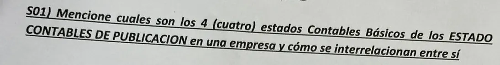
S01 · Tema S · 2023📷 Ver cómo se preguntó en los otros 3 temas
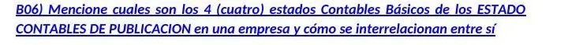
B06 · Tema B · Modelo de parcial (modelo de parcial con la clave)
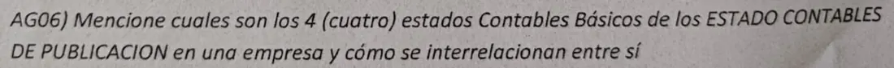
AG06 · Tema AG · nov 2024O05 · Tema O · 11 jul 2023 (foto de la hoja completa)
📖 Respuesta modelo
Los cuatro:
Estado de Situación Patrimonial (Balance General): foto a una fecha. Activo, Pasivo y PN, ordenados en 5 masas por liquidez y exigibilidad. Variables de stock.
Estado de Resultados (Cuadro de Resultados): ingresos, costos, gastos e impuestos del período. Criterio de lo devengado. Variables de flujo.
Estado de Evolución del Patrimonio Neto: movimientos de cada cuenta del PN (capital, reservas, resultados) entre el 1/1 y el 31/12.
Estado de Flujo de Efectivo: origen y aplicación del efectivo y equivalentes (operación, inversión, financiación). Criterio de lo percibido.
Interrelaciones (nombrá al menos 4):
CR → BG: la Utilidad Neta del CR es el «Resultado del ejercicio» dentro del PN del BG.
CR → EEPN: la misma UN figura en el EEPN.
EEPN → BG: el PN total al cierre del EEPN es el PN del BG.
EFE → BG: el saldo final de efectivo y equivalentes es igual a Caja y Bancos del BG.
EFE ↔ BG: los flujos de inversión explican la variación del activo fijo; los de financiación, la de deudas financieras y aportes; los operativos, la de clientes, inventarios y proveedores.
CR ↔ EFE: ingresos y gastos del CR se convierten en cobros y pagos de la actividad operativa (devengado vs percibido).
Complemento que suma: además de los básicos, los EECC de publicación traen información complementaria obligatoria (memoria, informe de auditoría, notas y anexos).
📐 Gráfico del apunte de la cátedra
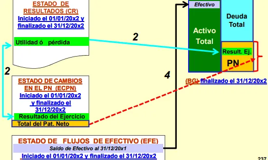
Cómo se conectan los estados contables: el resultado del CR pasa al PN del balance y al EEPN; el EFE explica la caja del balance. (Control de Gestion 2°P GC.pdf, pág. 26)
T1.2🔥 CRÍTICA • 4 aparicionesEstados contables📐 Con gráfico
T1.2 · Análisis de tamaño homogéneo (common size)
📍 Dónde aparece / dónde buscarlo
📝 O02 · Tema O (11 jul 2023)📝 R06 · Tema R (nov 2023)📝 AA01 · Tema AA (oct 2024)📝 AH02 · Tema AH (nov 2024)
📷 Así apareció en el parcialR06 · Tema R · nov 2023 (hoja de una alumna)📷 Ver cómo se preguntó en los otros 3 temas
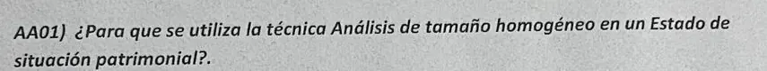
AA01 · Tema AA · oct 2024
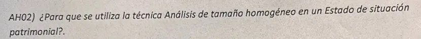
AH02 · Tema AH · nov 2024O02 · Tema O · 11 jul 2023 (foto de la hoja completa)
📖 Respuesta modelo
Expresa cada rubro del balance como porcentaje de la cifra mayor: el Activo Total (en el CR, las Ventas = 100 %), año a año.
Sirve para ver la estructura patrimonial (peso relativo de cada masa) y su evolución a lo largo de los años.
Al trabajar en términos relativos elimina el efecto de la inflación y del tamaño.
Por eso permite comparar con competidores o con líderes del sector (benchmarking), aunque tengan distinto tamaño.
⚠️
Ojo: si se toma como base otra cifra que no sea la mayor, se desvirtúa el análisis.
📐 Gráfico del apunte de la cátedra
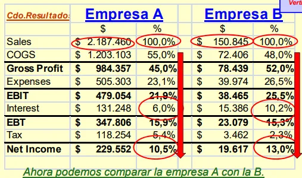
Tamaño homogéneo: cada rubro como % de las ventas (o del activo total) para comparar dos empresas de distinto tamaño. (Control de Gestion 2°P GC.pdf, pág. 28)
T1.3⚡ ALTA • 3 aparicionesEstados contables📐 Con gráfico
T1.3 · Masas patrimoniales y orden según el país
📍 Dónde aparece / dónde buscarlo
📝 F01 · Tema F (Viernes, nov 2022)📝 S05 · Tema S (2023)📝 AA02 · Tema AA (oct 2024)
📷 Así apareció en el parcial
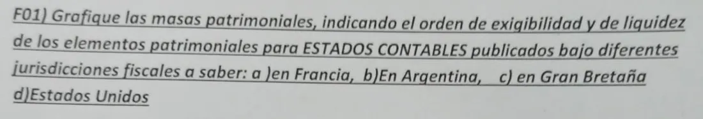
F01 · Tema F · Viernes, nov 2022📷 Ver cómo se preguntó en los otros 2 temas
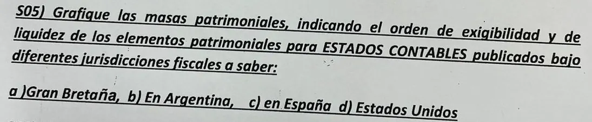
S05 · Tema S · 2023
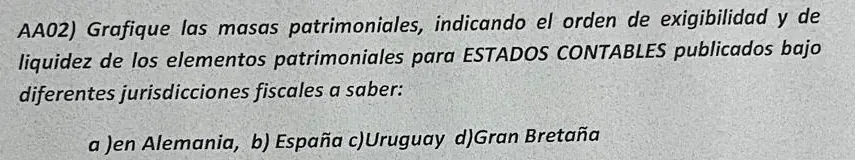
AA02 · Tema AA · oct 2024
📖 Respuesta modelo
Preguntaron por Francia, Argentina, Gran Bretaña, EE. UU., España, Alemania y Uruguay. La cátedra los agrupa en tres modelos:
Modelo
Países
Lado izquierdo (Activo), de arriba a abajo
Lado derecho, de arriba a abajo
2 columnas «americano»
Argentina, EE. UU. (y Uruguay, por seguir el modelo americano)
De mayor a menor liquidez: Activo Corriente (Disponible, Realizable, Bienes de cambio) → Activo No Corriente
De mayor a menor exigibilidad: DCP → DLP → PN
2 columnas «europeo»
Francia, España, Alemania
De menor a mayor liquidez: Activo Fijo (inmovilizado) → Bienes de cambio → Realizable → Disponible
De menor a mayor exigibilidad: PN → DLP → DCP
1 columna (vertical)
Gran Bretaña
Una sola columna: activos de menor a mayor liquidez y, debajo, pasivos de mayor a menor exigibilidad, hasta llegar al PN
—
En el gráfico dibujá los 5 «ladrillos» (AC, AF | DCP, DLP, PN) y una flecha al costado que diga «liquidez creciente» y «exigibilidad creciente» en el sentido que corresponda a cada país.
⚠️
Ojo: Uruguay no figura en el resumen; lo ubicamos en el modelo americano por el criterio continental de la cátedra.
📐 Gráfico del apunte de la cátedra
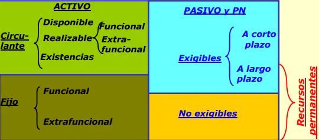
Orden de las masas: activo por liquidez (circulante arriba, fijo abajo) y pasivo por exigibilidad (corto, largo, no exigible). (Control de Gestion 2°P GC.pdf, pág. 18)
T1.4📌 MEDIA • 2 aparicionesEstados contables📐 Con gráfico
T1.4 · Contabilidad patrimonial vs de costos vs de gestión
📍 Dónde aparece / dónde buscarlo
📝 N03 · Tema N (27 jun 2023)📝 AA03 · Tema AA (oct 2024)
📷 Así apareció en el parcialN03 · Tema N · 27 jun 2023 (con tildes de corrección)📷 Ver cómo se preguntó en los otros 1 temas
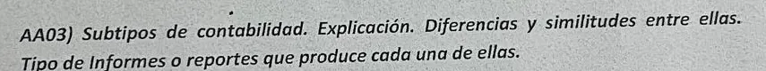
AA03 · Tema AA · oct 2024
📖 Respuesta modelo
Patrimonial
De costos
De gestión (gerencial)
Para quién
Usuarios externos: inversores, fisco, acreedores
Alimenta a las otras dos
Usuarios internos: dirección, gerencias
Normas
Normada (PCGA, leyes)
La metodología la decide la gerencia
Sin normas, a medida
Alcance
La empresa en su conjunto
Productos, procesos, centros de costo
Segmentos, líneas de producto, áreas
Tiempo
Pasado, histórica y objetiva
Presente
Presente y futuro, proyecta
Informes
EECC de publicación (BG, CR, EEPN, EFE)
Costo unitario, CMV, valuación de inventarios; costeo por absorción (a la patrimonial) y marginal (a la de gestión)
Presupuestos, EECC proyectados, EECC esquemáticos, análisis de desvíos, tableros
Sirve para decidir
No
Parcialmente
Sí
Similitud: las tres registran variables de stock y de flujo de la misma empresa y se nutren entre sí.
📐 Gráfico del apunte de la cátedra
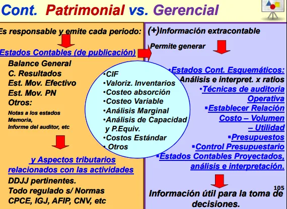
Contabilidad patrimonial (para terceros, normada) frente a la gerencial (para decidir, sin normas). (Control de Gestion 2°P GC.pdf, pág. 17)
T1.5📌 MEDIA • 2 aparicionesEstados contables❌ Respuesta que circula corregida
T1.5 · Situación patrimonial, económica y financiera de corto/mediano plazo
📍 Dónde aparece / dónde buscarlo
📝 U06 · Tema U (Recuperatorio dic 2023)📝 B02 · Tema B (Modelo de parcial)
📷 Así apareció en el parcial
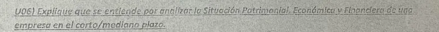
U06 · Tema U · Recuperatorio dic 2023📷 Ver cómo se preguntó en los otros 1 temas
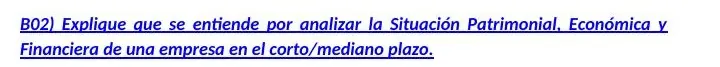
B02 · Tema B · Modelo de parcial (modelo de parcial con la clave)
📖 Respuesta modelo
Patrimonial: estructura del balance (composición y peso de AC, AF, DCP, DLP y PN), su evolución y el equilibrio entre masas (relación D/E, recursos de corto vs de largo, FM). Estados: BG y EEPN.
Económica: capacidad de generar beneficios: márgenes, rendimientos (Ra, Ra′, Ra″, ROE), estructura de costos y riesgo operativo. Estados: CR, activos totales y PN.
Financiera: capacidad de pagar las obligaciones a su vencimiento. Corto plazo: liquidez, plazos de cobro y pago, ciclos, NOF vs FM, tesorería. Largo plazo: solvencia y adecuación de la financiación a las inversiones. Estados: BG, EEPN y EFE.
❌
Ojo: la respuesta del Tema U con nota 7,5 se quedó en «ver cómo se relacionan los cuadros». Faltó nombrar los indicadores de cada análisis.
T1.6📌 MEDIA • 2 aparicionesEstados contables
T1.6 · Análisis financiero vs administración financiera vs planeación financiera
📍 Dónde aparece / dónde buscarlo
📝 F04 · Tema F (Viernes, nov 2022)📝 S04 · Tema S (2023)
📷 Así apareció en el parcialF04 · Tema F · Viernes, nov 2022📷 Ver cómo se preguntó en los otros 1 temas
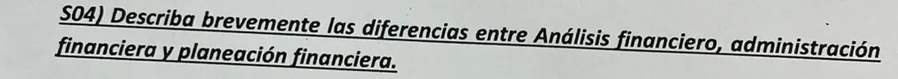
S04 · Tema S · 2023
📖 Respuesta modelo
Análisis financiero: diagnostica la situación en un momento dado a partir de los EECC (ratios, tendencias). Mira el pasado y el presente: fortalezas, debilidades, rentabilidad, liquidez y solvencia.
Administración financiera: gestiona los recursos en el día a día para maximizar el valor de la empresa y asegurar liquidez: decide inversión, financiación y dividendos.
Planeación financiera: fija metas de corto y largo plazo y cómo alcanzarlas: presupuestos, proyecciones de ingresos y gastos, necesidades de financiamiento. Mira el futuro.
T1.7📎 BAJA • 1 apariciónEstados contables📐 Con gráfico
T1.7 · Las cinco masas patrimoniales y su proporcionalidad
📍 Dónde aparece / dónde buscarlo
📝 O03 · Tema O (11 jul 2023)
📷 Así apareció en el parcialO03 · Tema O · 11 jul 2023 (foto de la hoja completa)
📖 Respuesta modelo
AC y AF a la izquierda (inversión o estructura económica); DCP, DLP y PN a la derecha (financiación o estructura financiera).
Proporción del lado izquierdo (AC/AF): depende del rubro y de la tecnología (capital intensivo), de la política de apalancamiento operativo y del ciclo de vida.
Proporción del lado derecho (Deuda/PN, corto/largo): depende del acceso al crédito, del costo de la deuda frente al rendimiento y de la política de apalancamiento financiero y dividendos.
📐 Gráfico del apunte de la cátedra
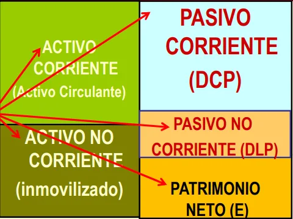
Las cinco masas patrimoniales: activo corriente y no corriente; pasivo corriente, no corriente y patrimonio neto. (Control de Gestion 2°P GC.pdf, pág. 17)
T1.8📎 BAJA • 1 apariciónEstados contables📐 Con gráfico
T1.8 · Balance esquemático: cómo se confecciona
📍 Dónde aparece / dónde buscarlo
📝 F06 · Tema F (Viernes, nov 2022)
📷 Así apareció en el parcialF06 · Tema F · Viernes, nov 2022
📖 Respuesta modelo
Se parte de los EECC de publicación de la contabilidad patrimonial. Luego se reclasifican las partidas en las 5 masas, se hace el análisis de extrafuncionalidad (se separan los activos y resultados ajenos al negocio) y se agrega información extracontable y de costos. El resultado son los EECC esquemáticos que usa la contabilidad de gestión para diagnosticar la salud económico-financiera y decidir.
📐 Gráfico del apunte de la cátedra
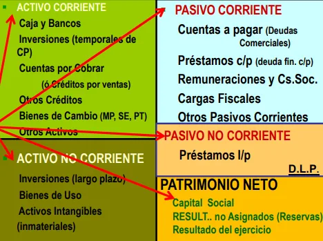
Balance esquemático con las cuentas típicas de cada masa. (Control de Gestion 2°P GC.pdf, pág. 17)
T1.9📎 BAJA • 1 apariciónEstados contables
T1.9 · Liquidez de un activo y dilema rendimiento–liquidez
📍 Dónde aparece / dónde buscarlo
📝 O04 · Tema O (11 jul 2023)
📷 Así apareció en el parcialO04 · Tema O · 11 jul 2023 (foto de la hoja completa)
📖 Respuesta modelo
Liquidez es la capacidad de un activo de convertirse en dinero en el muy corto plazo. Un activo es más líquido cuando se puede vender rápido sin pérdida importante de valor (dos dimensiones: rapidez y pérdida de valor). El dilema: cualquier activo se vuelve líquido si se rebaja lo suficiente; tener mucho activo líquido da seguridad pero rinde poco, y los activos que más rinden son los menos líquidos. La empresa exitosa es suficientemente líquida y a la vez rentable.
T1.10📎 BAJA • 1 apariciónEstados contables
T1.10 · Inversiones financieras dentro del inmovilizado
📍 Dónde aparece / dónde buscarlo
📝 U01 · Tema U (Recuperatorio dic 2023)
📷 Así apareció en el parcial
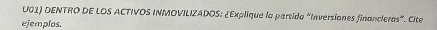
U01 · Tema U · Recuperatorio dic 2023
📖 Respuesta modelo
Participaciones en el capital de otras empresas o colocaciones a más de un año: acciones de otras compañías, bonos o plazos fijos a largo plazo. Son activos no corrientes y generalmente extrafuncionales: generan resultados extraordinarios, ajenos a la explotación.
T1.11📎 BAJA • 1 apariciónEstados contables
T1.11 · Provisión vs previsión
📍 Dónde aparece / dónde buscarlo
📝 AG02 · Tema AG (nov 2024)
📷 Así apareció en el parcialAG02 · Tema AG · nov 2024
📖 Respuesta modelo
Previsión
Provisión
Cuenta regularizadora del activo (resta)
Cuenta del pasivo
Hecho incierto: puede o no ocurrir; se estima con un porcentaje
Hecho cierto: se va a pagar; se conoce el monto aproximado, no el momento
Ej.: previsión para incobrables, para devoluciones
Ej.: provisión para impuestos, cargas sociales, indemnizaciones, juicios
T1.12📎 BAJA • 1 apariciónEstados contables📐 Con gráfico
T1.12 · Capital intensivo y masas del lado izquierdo
📍 Dónde aparece / dónde buscarlo
📝 AG05 · Tema AG (nov 2024)
📷 Así apareció en el parcial
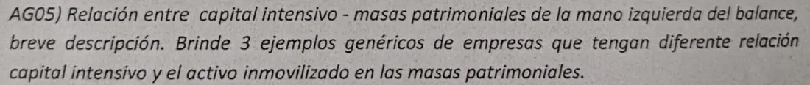
AG05 · Tema AG · nov 2024
📖 Respuesta modelo
Una empresa es capital intensiva cuando necesita mucho activo fijo por peso vendido (alta intensidad del activo fijo = AF/Ventas). Cuanto más capital intensiva, mayor el peso del activo inmovilizado frente al circulante. Ejemplos:
Muy capital intensiva: telefónica, ferrocarril, siderúrgica o autopista con telepeaje: el AF domina el activo.
Intermedia: manufactura (AF cerca del 55 % del activo según la cátedra).
Poco capital intensiva: comercio minorista o consultora (AF de 15–40 %): pesan inventarios, cuentas por cobrar y caja.
📐 Gráfico del apunte de la cátedra
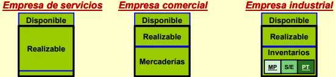
Peso de las masas del lado izquierdo según el tipo de empresa: servicios, comercial e industrial. (Control de Gestion 2°P GC.pdf, pág. 19)
T2
Variables de stock y de flujo; variaciones patrimoniales (10 apariciones)
Teoría
🧭 Método de la sección
Es la familia más repetida: 10 apariciones entre las dos. Son puntos «regalados» si te sabés la tabla de abajo de memoria.
T2.1🔥 CRÍTICA • 5 aparicionesStock/flujo y variaciones📐 Con gráfico❌ Respuesta que circula corregida
T2.1 · Variables de stock y de flujo
📍 Dónde aparece / dónde buscarlo
📝 F03 · Tema F (Viernes, nov 2022)📝 U02 · Tema U (Recuperatorio dic 2023)📝 AA05 · Tema AA (oct 2024)📝 R05 · Tema R (nov 2023)📝 B01 · Tema B (Modelo de parcial)
📷 Así apareció en el parcial
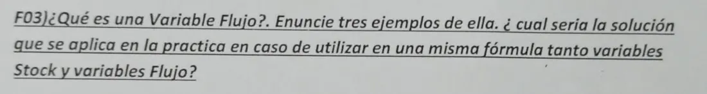
F03 · Tema F · Viernes, nov 2022📷 Ver cómo se preguntó en los otros 4 temas
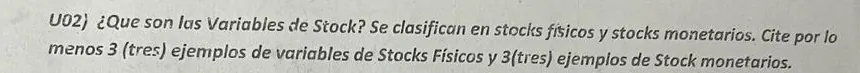
U02 · Tema U · Recuperatorio dic 2023
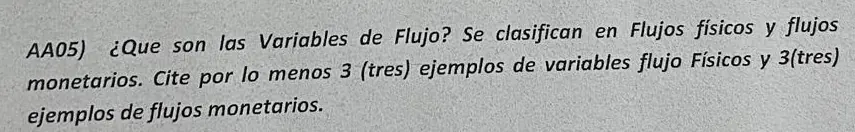
AA05 · Tema AA · oct 2024
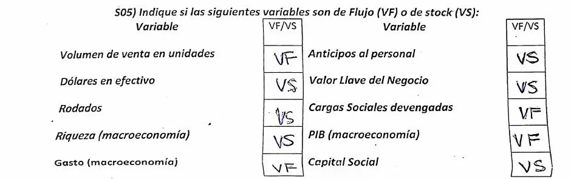
R05 · Tema R · nov 2023 (hoja de una alumna)
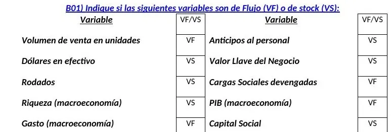
B01 · Tema B · Modelo de parcial (modelo de parcial con la clave)
📖 Respuesta modelo
Variable de stock (VS): cantidad existente en un instante (estática, acumulación). Se mide en $ o en unidades. Está en el Balance General.
Físicas: unidades de MP en depósito, cabezas de ganado, botellas en bodega, reservas de petróleo, área cultivada, personal de la empresa.
Monetarias: saldo en caja y bancos, plazos fijos, reservas monetarias del BCRA, saldo de deuda externa, cuentas por cobrar.
Variable de flujo (VF): movimiento por unidad de tiempo (dinámica). Se mide en $/período o unidades/período. Está en el Cuadro de Resultados, el EFE y el EEPN.
Físicas: unidades producidas por mes, kg de MP consumidos por trimestre, materias aprobadas en el año, resmas compradas en el año.
Si en una misma fórmula hay VS y VF (por ejemplo rotaciones o rendimientos): se ajusta la variable de stock usando su promedio (saldo inicial + saldo final) / 2, para que represente el mismo período que el flujo.
Tabla que se toma tal cual (R05 y B01):
Variable
Tipo
Variable
Tipo
Volumen de venta en unidades
VF
Anticipos al personal
VS
Dólares en efectivo
VS
Valor llave del negocio
VS
Rodados
VS
Cargas sociales devengadas
VF
Riqueza (macroeconomía)
VS
PIB (macroeconomía)
VF
Gasto (macroeconomía)
VF
Capital social
VS
Otras que aparecen en el banco de la cátedra: Fondo de maniobra VS, Inversiones en plazo fijo VS, Cobranza a clientes VF, Compras VF, Deudores en gestión judicial VS, Impuestos a pagar VS, Intereses devengados VF.
Regla para no fallar: «devengado», «del año», «pagado», «compras» = flujo; «a pagar», «anticipo», «saldo», un bien que se tiene = stock.
❌
Ojo: la respuesta de «Preguntas Gina» pone Cargas sociales devengadas como VS; la solución del modelo y el banco de la cátedra la dan como VF (es el gasto del período; el saldo a pagar sería VS). En el Tema U, el alumno con 7,5 puso PIB y «Balance» como stock monetario: el PIB es flujo y el balance es un estado, no una variable.
📐 Gráfico del apunte de la cátedra
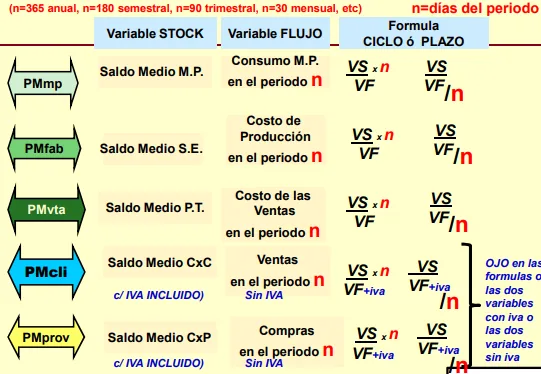
Variables de stock (saldo medio) y de flujo (consumo, costo, ventas, compras) que se combinan en cada plazo medio. (Control de Gestion 2°P GC.pdf, pág. 52)
T2.2🔥 CRÍTICA • 4 aparicionesStock/flujo y variaciones
T2.2 · Variaciones patrimoniales permutativas: describir, ejemplo y gráfico
📍 Dónde aparece / dónde buscarlo
📝 F05 · Tema F (Viernes, nov 2022)📝 S06 · Tema S (2023)📝 AH05 · Tema AH (nov 2024)📝 AD03 · Tema AD (oct 2024 (carpeta «Tema AC»))
📷 Así apareció en el parcial
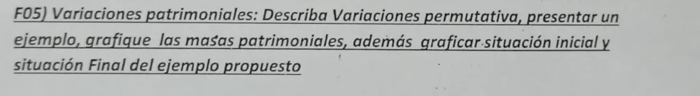
F05 · Tema F · Viernes, nov 2022📷 Ver cómo se preguntó en los otros 3 temas
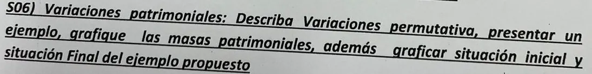
S06 · Tema S · 2023
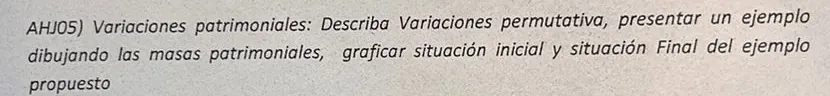
AH05 · Tema AH · nov 2024
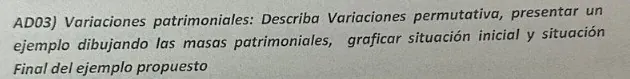
AD03 · Tema AD · oct 2024 (carpeta «Tema AC»)
📖 Respuesta modelo
Una variación patrimonial es un cambio en el patrimonio provocado por un hecho cuantificable en $. Tipos:
Permutativa: cambia la composición pero no el PN (ΔPN = 0).
De 1 columna: sube y baja el mismo lado (A↑ A↓, o P↑ P↓). Ej.: compro una computadora al contado.
De 2 columnas: suben o bajan ambos lados por igual (A↑ P↑, o A↓ P↓). Ej.: compro equipos a crédito.
Modificativa: cambia el PN.
Propia: por el resultado de la operación (cobro de un servicio prestado +, pago de sueldos −).
Impropia: por aportes o retiros de los socios.
Mixta: combina una permuta con un resultado (vendo con ganancia o con pérdida).
Ejemplo para graficar: compra de una computadora por $100 al contado. Se dibujan los 5 bloques antes y después.
Masa
Situación inicial
Situación final
Activo Corriente (Caja)
500
400
Activo Fijo
1.000
1.100
Total Activo
1.500
1.500
DCP
300
300
DLP
400
400
PN
800
800
Total Pasivo + PN
1.500
1.500
El AC baja 100 y el AF sube 100: cambia la composición del activo, el total y el PN quedan iguales (permutativa de 1 columna).
T2.3📎 BAJA • 1 apariciónStock/flujo y variaciones❌ Respuesta que circula corregida
T2.3 · Clasificar transacciones
📍 Dónde aparece / dónde buscarlo
📝 P02 · Tema P (2023)
📷 Así apareció en el parcial
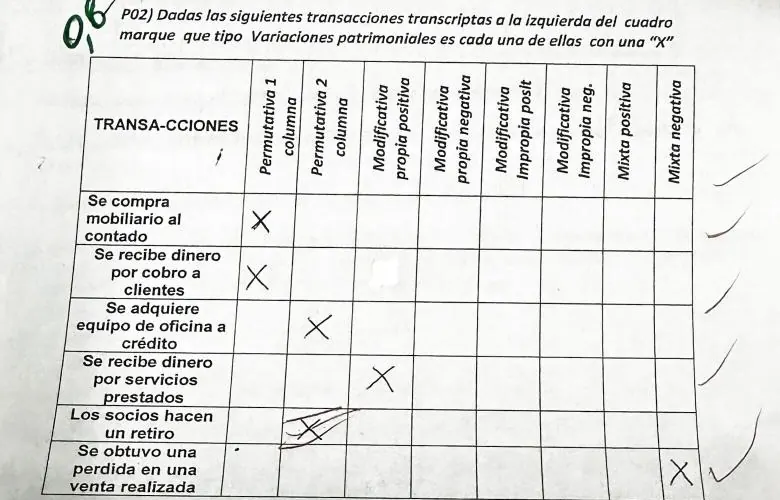
P02 · Tema P · 2023 (hoja de una alumna, con sus marcas)
📖 Respuesta modelo
Transacción
Tipo
Se compra mobiliario al contado
Permutativa 1 columna
Se recibe dinero por cobro a clientes
Permutativa 1 columna
Se adquiere equipo de oficina a crédito
Permutativa 2 columnas
Se recibe dinero por servicios prestados
Modificativa propia positiva
Los socios hacen un retiro
Modificativa impropia negativa
Se obtuvo una pérdida en una venta realizada
Mixta negativa
❌
Ojo: en el Tema P corregido (nota 7) la alumna marcó «retiro de socios» como permutativa de 2 columnas y se lo tacharon: baja el activo y baja el PN, así que es modificativa impropia negativa.
T3
Finanzas operativas: FM, NOF, capital de trabajo y tesorería (23 apariciones)
Teoría
🧭 Método de la sección
Es la sección con más preguntas (12 distintas, 23 apariciones). Casi todas se responden con dos fórmulas y un gráfico de bloques:
FM=(PN+DLP)−AF=AC−DCPNOF=ACop−PCopST=FM−NOF
T3.1🔥 CRÍTICA • 4 aparicionesFM, NOF y tesorería📐 Con gráfico
T3.1 · Qué pasa con el FM cuando se aprueba un concurso de acreedores
📍 Dónde aparece / dónde buscarlo
📝 N04 · Tema N (27 jun 2023)📝 H02 · Tema H (Viernes, nov 2022)📝 S02 · Tema S (2023)📝 AD02 · Tema AD (oct 2024 (carpeta «Tema AC»))
📷 Así apareció en el parcialN04 · Tema N · 27 jun 2023 (con tildes de corrección)📷 Ver cómo se preguntó en los otros 3 temasH02 · Tema H · Viernes, nov 2022
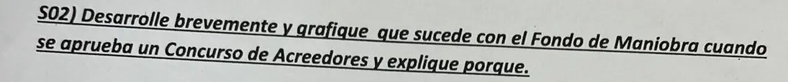
S02 · Tema S · 2023
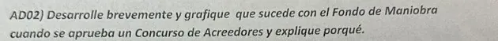
AD02 · Tema AD · oct 2024 (carpeta «Tema AC»)
📖 Respuesta modelo
Antes: la empresa tiene FM < 0 en forma sostenida (parte del AF financiado con deuda de corto). No puede pagar con regularidad: cesación de pagos.
El concurso es una herramienta judicial de refinanciación de pasivos: un juez verifica las deudas y la empresa propone una quita y un plan de pagos en cuotas, que deben aprobar los acreedores por doble mayoría (de personas y de capital).
Al aprobarse, las deudas de corto plazo se transforman en deudas de largo plazo (y en parte se reducen por la quita). Suben los recursos permanentes y baja el DCP: el FM pasa de negativo a positivo.
La empresa usa ese tiempo para corregir el negocio. Si el acuerdo no se aprueba: continúa bajo vigilancia de un síndico o va a quiebra (liquidación de activos).
Gráfico (dos balances de bloques):
Antes del concurso
Después del concurso
Izquierda
AC chico · AF grande
AC · AF (iguales)
Derecha
DCP grande · DLP chico · PN
DCP chico · DLP grande · PN
FM = RP − AF
Negativo (RP < AF)
Positivo (RP > AF)
📐 Gráfico del apunte de la cátedra
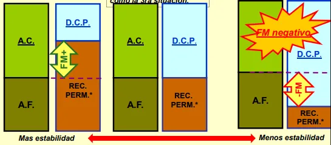
De más a menos estabilidad: cuando los recursos permanentes no cubren el activo fijo, el FM se vuelve negativo. (Control de Gestion 2°P GC.pdf, pág. 36)
T3.2⚡ ALTA • 3 aparicionesFM, NOF y tesorería📐 Con gráfico❌ Respuesta que circula corregida
T3.2 · Por qué una empresa con ventas crecientes puede caer en cesación de pagos
📍 Dónde aparece / dónde buscarlo
📝 N01 · Tema N (27 jun 2023)📝 S03 · Tema S (2023)📝 U05 · Tema U (Recuperatorio dic 2023)
📷 Así apareció en el parcialN01 · Tema N · 27 jun 2023 (con tildes de corrección)📷 Ver cómo se preguntó en los otros 2 temasS03 · Tema S · 2023U05 · Tema U · Recuperatorio dic 2023
📖 Respuesta modelo
Al crecer las ventas crecen las NOF: más cuentas por cobrar, más inventarios de MP, SE y PT, en proporción a las ventas.
El FM es estable: solo cambia con decisiones de largo plazo (aportes, deuda de largo, reinversión). La financiación espontánea de proveedores tiene un tope.
Entonces NOF > FM y la situación de tesorería se vuelve negativa (ST = FM − NOF < 0). La diferencia hay que salir a buscarla con deuda de corto plazo, cara y limitada.
Si las líneas de crédito no alcanzan o el ciclo de caja se alarga (se paga a proveedores antes de cobrar), hay crisis de liquidez: la empresa es rentable en el CR pero no tiene efectivo, y termina en cesación de pagos.
En términos de crecimiento: crece más rápido que su tasa de crecimiento sostenible (la que puede financiar con su estructura de capital actual).
❌
Ojo: la respuesta del Tema U con 7,5 tiene la idea pero el docente anotó «tiene que ver con el financiamiento del crecimiento»: nombrá NOF, FM y ST.
📐 Gráfico del apunte de la cátedra
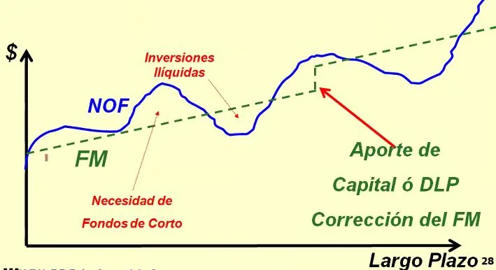
Las NOF crecen con las ventas mientras el FM queda estable: la brecha se cubre con deuda de corto plazo. (Control de Gestion 2°P GC.pdf, pág. 56)
T3.3📌 MEDIA • 2 aparicionesFM, NOF y tesorería📐 Con gráfico
T3.3 · Finanzas operacionales vs estructurales
📍 Dónde aparece / dónde buscarlo
📝 H01 · Tema H (Viernes, nov 2022)📝 AD01 · Tema AD (oct 2024 (carpeta «Tema AC»))
📷 Así apareció en el parcialH01 · Tema H · Viernes, nov 2022📷 Ver cómo se preguntó en los otros 1 temas
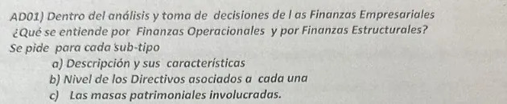
AD01 · Tema AD · oct 2024 (carpeta «Tema AC»)
📖 Respuesta modelo
Operacionales
Estructurales
Descripción
Decisiones de inversión y financiación del día a día, de corto plazo. Presupuestan el efectivo. Se miden en ciclos, rotaciones y velocidades
Decisiones de planeamiento de largo plazo: presupuesto de capital, inversión, endeudamiento y dividendos
Directivos
Directores operacionales (mandos medios)
Alta dirección
Masas
Activo corriente y deuda de corto plazo (AC y DCP)
Activo fijo y recursos permanentes (AF, DLP y PN)
📐 Gráfico del apunte de la cátedra
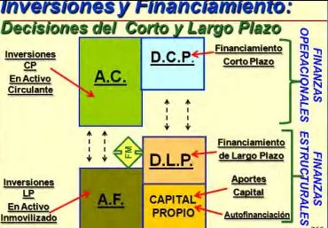
Finanzas operacionales (corto plazo: AC y DCP) y estructurales (largo plazo: AF, DLP y capital). (Control de Gestion 2°P GC.pdf, pág. 50)
T3.4📌 MEDIA • 2 aparicionesFM, NOF y tesorería📐 Con gráfico❌ Respuesta que circula corregida
T3.4 · Activo y pasivo circulante operativo; su diferencia
📍 Dónde aparece / dónde buscarlo
📝 H04 · Tema H (Viernes, nov 2022)📝 AD04 · Tema AD (oct 2024 (carpeta «Tema AC»))
📷 Así apareció en el parcialH04 · Tema H · Viernes, nov 2022📷 Ver cómo se preguntó en los otros 1 temas
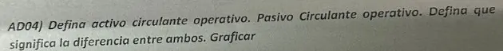
AD04 · Tema AD · oct 2024 (carpeta «Tema AC»)
📖 Respuesta modelo
Activo circulante operativo (ACop): la inversión en circulante que el negocio necesita para operar: cuentas por cobrar + inventarios (MP, SE, PT). Es el AC menos las disponibilidades e inversiones temporales. También se llama necesidades cíclicas.
Pasivo circulante operativo (PCop): la financiación espontánea, sin costo explícito, que genera la propia operación: proveedores, deudas sociales, sueldos y cargas a pagar, impuestos a pagar.
Diferencia = NOF: lo que la empresa tiene que financiar con recursos propios o deuda con costo para poder operar. Si el FM las cubre, ST > 0; si no, hay que pedir deuda de corto.
Gráfico: a la izquierda el bloque ACop; a la derecha el bloque PCop más abajo; el hueco entre ambos es la NOF, cubierta por el FM y, si no alcanza, por deuda financiera de corto.
❌
Ojo: en «Preguntas Gina» dice «AC menos realizable y bienes de cambio». Es al revés: se restan las disponibilidades; el realizable y los bienes de cambio son justamente el ACop.
📐 Gráfico del apunte de la cátedra
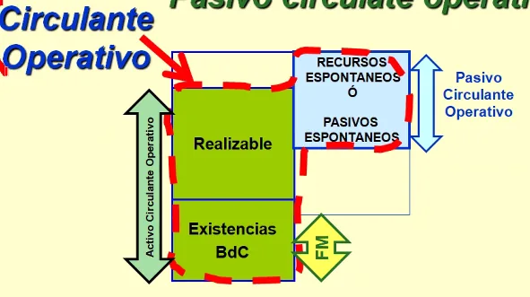
Circulante operativo: lo realizable y las existencias, menos los pasivos espontáneos, deja las NOF. (Control de Gestion 2°P GC.pdf, pág. 53)
T3.5📌 MEDIA • 2 aparicionesFM, NOF y tesorería📐 Con gráfico
T3.5 · Activo fijo bastante mayor que los recursos permanentes: diagnóstico
📍 Dónde aparece / dónde buscarlo
📝 H05 · Tema H (Viernes, nov 2022)📝 AD05 · Tema AD (oct 2024 (carpeta «Tema AC»))
📷 Así apareció en el parcial
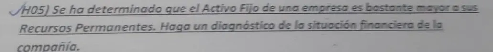
H05 · Tema H · Viernes, nov 2022📷 Ver cómo se preguntó en los otros 1 temasAD05 · Tema AD · oct 2024 (carpeta «Tema AC»)
📖 Respuesta modelo
FM = RP − AF < 0: parte del activo fijo está financiada con deuda de corto plazo, y el AC < DCP.
Es desequilibrio financiero: al vencer esas deudas, el activo fijo todavía no generó los fondos para pagarlas. Hay riesgo de crisis de liquidez.
Si se prolonga se vuelve crisis de solvencia (no alcanza ni vendiendo los activos) y termina en concurso o quiebra.
Correcciones: aumentar los recursos permanentes (aporte de capital, deuda de largo, reinvertir utilidades), refinanciar la deuda de corto a largo, o desinvertir activos fijos ociosos.
Excepción: supermercados y servicios que cobran al contado y pagan a plazo pueden vivir con FM < 0.
📐 Gráfico del apunte de la cátedra
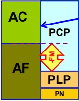
El FM es la parte de los recursos permanentes que queda después de financiar el activo fijo. (Control de Gestion 2°P GC.pdf, pág. 33)
T3.6📌 MEDIA • 2 aparicionesFM, NOF y tesorería📐 Con gráfico
T3.6 · Activos circulantes temporales o estacionales
📍 Dónde aparece / dónde buscarlo
📝 H06 · Tema H (Viernes, nov 2022)📝 AD06 · Tema AD (oct 2024 (carpeta «Tema AC»))
📷 Así apareció en el parcialH06 · Tema H · Viernes, nov 2022📷 Ver cómo se preguntó en los otros 1 temas
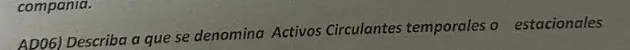
AD06 · Tema AD · oct 2024 (carpeta «Tema AC»)
📖 Respuesta modelo
Son la parte del activo circulante que fluctúa con la estacionalidad de la operación normal, por encima del nivel mínimo permanente (los activos circulantes recurrentes). Ej.: una juguetería acumula inventario y cuentas por cobrar antes de Navidad; una heladería, en verano. Hay que financiarlos a tiempo, normalmente con deuda de corto plazo o con el excedente de FM según la estrategia de tesorería (T3.7).
📐 Gráfico del apunte de la cátedra
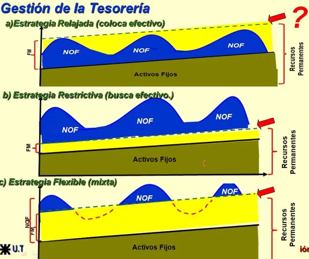
Necesidades que suben y bajan con la estación y cómo las cubre cada estrategia de tesorería. (Control de Gestion 2°P GC.pdf, pág. 56)
T3.7📌 MEDIA • 2 aparicionesFM, NOF y tesorería📐 Con gráfico
T3.7 · Política conservadora y estrategias de tesorería
📍 Dónde aparece / dónde buscarlo
📝 P05 · Tema P (2023)📝 AH01 · Tema AH (nov 2024)
📷 Así apareció en el parcialP05 · Tema P · 2023 (hoja de una alumna, con sus marcas)📷 Ver cómo se preguntó en los otros 1 temas
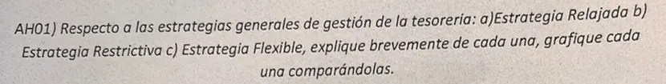
AH01 · Tema AH · nov 2024
📖 Respuesta modelo
Las NOF suben y bajan con las ventas; el FM es casi constante. Según dónde se fija el FM:
Estrategia
Dónde está el FM
Qué hace tesorería
Riesgo
Relajada (conservadora)
Por encima del pico de las NOF
Invierte los excedentes en colocaciones de corto plazo
Bajo riesgo, menor rentabilidad
Flexible (mixta)
Cerca del promedio de las NOF
Coloca excedentes en los valles y pide deuda de corto en los picos
Intermedio
Restrictiva (agresiva)
Cubre el AF y solo parte de las NOF
Financia el resto siempre con deuda de corto
Alto: si cortan las líneas de crédito, hay cesación de pagos
Gráfico: eje x tiempo, eje y $. Dibujá el AF como franja de abajo, las NOF como curva ondulada encima, y el FM como una línea horizontal: por encima de los picos (relajada), al medio (flexible) o por debajo de los valles (restrictiva).
Política conservadora de capital de trabajo (P05): mantener el AC siempre bastante mayor que el PC (FM > NOF). La tesorería tiene ST > 0 e invierte el sobrante a corto plazo; se reduce el riesgo de insolvencia a costa de rentabilidad.
📐 Gráfico del apunte de la cátedra
Estrategias de tesorería: relajada (todo con fondos de largo), restrictiva (picos con deuda de corto) y flexible (mixta). (Control de Gestion 2°P GC.pdf, pág. 56)
T3.8📌 MEDIA • 2 aparicionesFM, NOF y tesorería
T3.8 · Políticas (liquidez, inventarios, créditos, compras): concepto y plazo
📍 Dónde aparece / dónde buscarlo
📝 L03 · Tema L (27 jun 2023)📝 P04 · Tema P (2023)
📷 Así apareció en el parcial
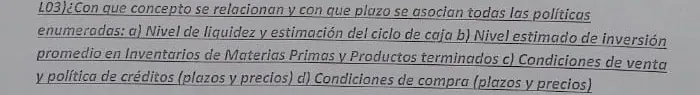
L03 · Tema L · 27 jun 2023📷 Ver cómo se preguntó en los otros 1 temasP04 · Tema P · 2023 (hoja de una alumna, con sus marcas)
📖 Respuesta modelo
Las cuatro se relacionan con el capital de trabajo / NOF (gestión del circulante, finanzas operacionales) y son de corto plazo. Cada una fija un subciclo del ciclo de caja:
Política
Concepto que fija
Ratio
a) Liquidez y estimación del ciclo de caja
Tesorería: caja mínima y ciclo de efectivo
Ciclo de caja = PMM − PM pago
b) Inversión promedio en inventarios de MP y PT
Política de inventarios
Plazo medio y rotación de inventarios
c) Condiciones de venta y política de créditos
Política comercial
Plazo medio de cobro = CxC / (Ventas + IVA) × días
d) Condiciones de compra
Política de pagos
Plazo medio de pago = CxP / (Compras + IVA) × días
T3.9📎 BAJA • 1 apariciónFM, NOF y tesorería📐 Con gráfico
T3.9 · Recursos permanentes, necesidades cíclicas y acíclicas, recursos espontáneos y expresos
📍 Dónde aparece / dónde buscarlo
📝 R01 · Tema R (nov 2023)
📷 Así apareció en el parcialR01 · Tema R · nov 2023 (hoja de una alumna)
📖 Respuesta modelo
Necesidades cíclicas: activo circulante ligado al ciclo de maduración; se renueva en cada ciclo (MP, SE, PT, CxC, caja mínima).
Necesidades acíclicas: activo fijo; permanece varios ciclos y los hace posibles.
Recursos espontáneos (cíclicos): pasivo corriente sin costo que surge solo de la operación: proveedores, deudas sociales, sueldos a pagar.
Recursos expresos: deuda de corto con costo, que hay que negociar: préstamos y descubiertos bancarios.
Recursos permanentes (acíclicos): PN + DLP.
Gráfico: izquierda necesidades cíclicas arriba y acíclicas abajo; derecha recursos espontáneos, expresos y permanentes.
📐 Gráfico del apunte de la cátedra
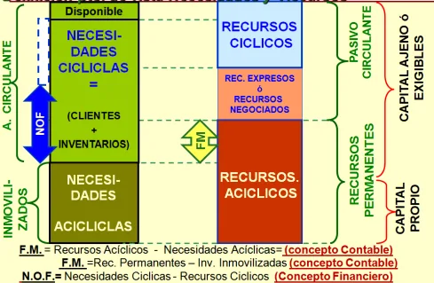
Necesidades cíclicas y acíclicas frente a recursos espontáneos, negociados y permanentes. (Control de Gestion 2°P GC.pdf, pág. 54)
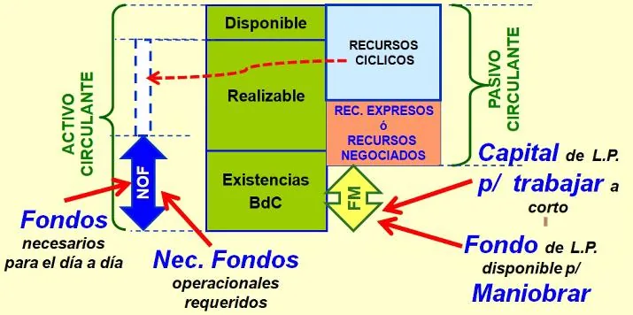
Las necesidades de fondos que no cubren los recursos espontáneos se cubren con el FM. (Control de Gestion 2°P GC.pdf, pág. 55)
T3.10📎 BAJA • 1 apariciónFM, NOF y tesorería📐 Con gráfico
T3.10 · Factores que determinan las NOF y gráfico en el tiempo
📍 Dónde aparece / dónde buscarlo
📝 R03 · Tema R (nov 2023)
📷 Así apareció en el parcialR03 · Tema R · nov 2023 (hoja de una alumna)
📖 Respuesta modelo
Factores: el nivel de ventas (mueve CxC, inventarios y proveedores), la duración del ciclo de maduración (política de inventarios y de crédito a clientes), la política de pago a proveedores (el ciclo de caja). Aleatorios: deudores incobrables y problemas de abastecimiento de MP.
Gráfico: las NOF oscilan con la estacionalidad alrededor de una tendencia creciente si la empresa crece; el FM es una línea casi plana que sube en escalón con aportes o deuda de largo. Donde NOF > FM hay que pedir fondos; donde NOF < FM sobra caja.
📐 Gráfico del apunte de la cátedra
Las NOF fluctúan con las ventas y el ciclo de maduración; el FM es estable y solo cambia con decisiones de largo plazo. (Control de Gestion 2°P GC.pdf, pág. 56)
T3.11📎 BAJA • 1 apariciónFM, NOF y tesorería📐 Con gráfico
T3.11 · Inversión acumulada vs tiempo en una empresa industrial
📍 Dónde aparece / dónde buscarlo
📝 U04 · Tema U (Recuperatorio dic 2023)
📷 Así apareció en el parcial
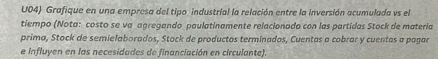
U04 · Tema U · Recuperatorio dic 2023
📖 Respuesta modelo
Gráfico escalonado: la inversión sube al comprar MP, sigue subiendo en semielaborados a medida que se agrega MOD y GIF, se mantiene en productos terminados hasta la venta, y sigue en cuentas por cobrar hasta el cobro, donde cae a cero. Las cuentas a pagar a proveedores cubren el tramo inicial: la parte de la inversión que no financian los proveedores es la necesidad de financiación del circulante (NOF), y su duración es el ciclo de caja.
📐 Gráfico del apunte de la cátedra
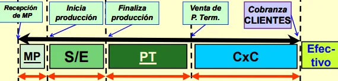
El dinero recorre MP → SE → PT → clientes → efectivo: la inversión se acumula hasta el cobro. (Control de Gestion 2°P GC.pdf, pág. 51)
T3.12📎 BAJA • 1 apariciónFM, NOF y tesorería📐 Con gráfico❌ Respuesta que circula corregida
T3.12 · Decisiones que hacen variar el FM y gráfico del FM en el tiempo
📍 Dónde aparece / dónde buscarlo
📝 H03 · Tema H (Viernes, nov 2022)
📷 Así apareció en el parcialH03 · Tema H · Viernes, nov 2022
📖 Respuesta modelo
Como FM = PN + DLP − AF, solo cambia con decisiones de largo plazo: aportes de capital (+), nueva deuda de largo (+) o su cancelación (−), utilidades retenidas (+) y dividendos (−), inversión en activo fijo (−) o su venta (+). Gráfico: línea que crece despacio con las utilidades retenidas y da saltos con un aporte o una deuda de largo nueva, y cae con una inversión en AF.
❌
Ojo: en el Tema H corregido, el alumno definió el ACop incluyendo la caja; para la cátedra las NOF no incluyen las disponibilidades (NOF = AC − disponibilidades − proveedores − deudas sociales).
📐 Gráfico del apunte de la cátedra
El FM como capital de largo plazo disponible para financiar el circulante. (Control de Gestion 2°P GC.pdf, pág. 34)
T4
Rendimientos y creación de valor: Dupont, ROIC, ROCE, WACC, EVA (9 apariciones)
Teoría
🧭 Método de la sección
6 preguntas, 9 apariciones (el V/F de EVA está en T7). Te piden la fórmula y para qué sirve: escribí siempre las dos cosas.
T4.1📌 MEDIA • 2 aparicionesDupont, WACC, EVA📐 Con gráfico
T4.1 · Índice Dupont: cálculo y significado
📍 Dónde aparece / dónde buscarlo
📝 L04 · Tema L (27 jun 2023)📝 P06 · Tema P (2023)
📷 Así apareció en el parcialL04 · Tema L · 27 jun 2023📷 Ver cómo se preguntó en los otros 1 temasP06 · Tema P · 2023 (hoja de una alumna, con sus marcas)
📖 Respuesta modelo
Descompone el rendimiento neto del activo en dos factores:
Ra=ATUN=margen netoVentasUN×rotacioˊn del activoATVentas
Margen neto: sale del CR; mide la eficiencia comercial (marketing).
Rotación del activo: relaciona CR y balance; mide la eficiencia productiva, la velocidad para generar ventas con la inversión.
Significado: explica de dónde viene el rendimiento y dónde mejorarlo. Hay negocios de mucho margen y poca rotación (joyería) y de poco margen y mucha rotación (supermercado).
Extensión al ROE: se multiplica por la palanca financiera AT/PN:
ROE=VentasUN×ATVentas×PNAT=Ra×(1+ED)
📐 Gráfico del apunte de la cátedra
Dupont desagregado: efecto fiscal, efecto intereses, margen operativo, rotación de activos y palanca financiera. (Control de Gestion 2°P GC.pdf, pág. 41)Del cuadro de resultados a los rendimientos: Ra″ = BAII / AT y Ra = BN / AT. (Control de Gestion 2°P GC.pdf, pág. 40)
T4.2📌 MEDIA • 2 aparicionesDupont, WACC, EVA📐 Con gráfico
T4.2 · WACC: qué es y cómo se determina
📍 Dónde aparece / dónde buscarlo
📝 AG03 · Tema AG (nov 2024)📝 AH03 · Tema AH (nov 2024)
📷 Así apareció en el parcialAG03 · Tema AG · nov 2024📷 Ver cómo se preguntó en los otros 1 temasAH03 · Tema AH · nov 2024
📖 Respuesta modelo
Es el costo promedio ponderado de todas las fuentes de financiación con costo explícito: lo que le cuesta a la empresa financiar sus activos. Se pondera cada fuente por su participación y la deuda se toma neta del ahorro impositivo (escudo fiscal):
WACC=Do+EDoKd(1−Tx)+Do+EEKe
Dₒ: deuda onerosa (financiera de corto + largo, sin los recursos espontáneos).
E: patrimonio neto.
Kd: costo de la deuda = gastos financieros / deuda onerosa.
Ke: costo de oportunidad del accionista (tasa libre de riesgo + primas de riesgo). Siempre Ke > Kd.
Tₓ: tasa de impuesto a las ganancias.
Es la vara contra la que se compara el ROIC para saber si la empresa crea valor.
📐 Gráfico del apunte de la cátedra
Estructura de capital óptima: el WACC baja con algo de deuda barata y sube cuando el riesgo encarece Kd y Ke. (Control de Gestion 2°P GC.pdf, pág. 57)Las tres preguntas del capital: dónde invertir (ROIC), cuánto se necesita (NOF y AF) y cómo financiarlo (WACC). (Control de Gestion 2°P GC.pdf, pág. 57)
T4.3📎 BAJA • 1 apariciónDupont, WACC, EVA📐 Con gráfico
T4.3 · ROIC vs ROCE
📍 Dónde aparece / dónde buscarlo
📝 B03 · Tema B (Modelo de parcial)
📷 Así apareció en el parcialB03 · Tema B · Modelo de parcial (modelo de parcial con la clave)
Similitud: en el balance corto el capital invertido es igual al capital empleado, así que numéricamente dan lo mismo. Los dos usan el NOPAT, no la UN.
Diferencia: el ROIC mira el lado de la inversión (lo que la empresa realmente invirtió en el negocio: NOF + activo inmovilizado); el ROCE mira el lado de la financiación (los capitales empleados con costo: propio + deuda onerosa neta).
Uso: el ROIC se usa para la creación de valor (ROIC > WACC, EVA) y para evaluar negocios o proyectos; el ROCE para ver el rendimiento que reciben quienes aportan el capital y comparar empresas con estructuras financieras distintas.
📐 Gráfico del apunte de la cátedra
ROIC (desde la inversión) y ROCE (desde la financiación): mismo NOPAT sobre el mismo total del balance corto. (Control de Gestion 2°P GC.pdf, pág. 58)
T4.4📌 MEDIA • 2 aparicionesDupont, WACC, EVA
T4.4 · Activos funcionales y extrafuncionales
📍 Dónde aparece / dónde buscarlo
📝 L05 · Tema L (27 jun 2023)📝 O01 · Tema O (11 jul 2023)
📷 Así apareció en el parcialL05 · Tema L · 27 jun 2023📷 Ver cómo se preguntó en los otros 1 temasO01 · Tema O · 11 jul 2023 (foto de la hoja completa)
📖 Respuesta modelo
Funcionales: los dedicados a la operación diaria del negocio; generan resultados ordinarios. Ej.: máquinas, inventarios, cuentas por cobrar a clientes.
Extrafuncionales: inversiones ajenas a la gestión directa del negocio; generan resultados extraordinarios o atípicos. Ej.: acciones de otra empresa, un terreno ocioso, un inmueble alquilado a terceros.
Por qué no se consideran en el análisis económico (O01): el rendimiento debe medir cómo se gestiona el negocio. Si se incluyen, se distorsionan los indicadores y se le reclaman al personal de operaciones resultados de activos que no gestiona.
T4.5📎 BAJA • 1 apariciónDupont, WACC, EVA📐 Con gráfico❌ Respuesta que circula corregida
T4.5 · Comparar dos plantas idénticas en distintos países: UN, Ra, ROE, Ra″, margen bruto o ROIC
📍 Dónde aparece / dónde buscarlo
📝 L06 · Tema L (27 jun 2023)
📷 Así apareció en el parcialL06 · Tema L · 27 jun 2023
📖 Respuesta modelo
Se usa el Ra″ = BAII / Activo total. Mide cómo cada gerente gestiona operativamente su inversión antes de intereses e impuestos, así que no lo afectan la estructura de financiación ni el régimen impositivo de cada país. La UN y el margen bruto no relacionan el resultado con la inversión; el Ra, el ROE y el ROIC son después de impuestos (y el ROE, además, depende de cómo se financia cada planta).
❌
Ojo: la respuesta que circula en «Preguntas Gina» (sacada de ChatGPT) elige el ROIC, que es después de impuestos. El banco de respuestas de la cátedra da el Ra″ para exactamente este caso.
📐 Gráfico del apunte de la cátedra
Ra″ mide el rendimiento del activo antes de intereses e impuestos, sin el efecto de la financiación ni del país. (Control de Gestion 2°P GC.pdf, pág. 40)
T4.6📎 BAJA • 1 apariciónDupont, WACC, EVA
T4.6 · Cuatro medidas para mejorar el EVA
📍 Dónde aparece / dónde buscarlo
📝 AG04 · Tema AG (nov 2024)
📷 Así apareció en el parcialAG04 · Tema AG · nov 2024
Mejorar el margen operativo con mejores procesos, más productividad y menos costos (sube el NOPAT).
Aumentar ingresos con nuevos productos y oportunidades de negocio que rindan más que el WACC.
Usar mejor los activos: subir la rotación, bajar las NOF (inventarios, plazos de cobro) y desinvertir activos que no cubren el costo de capital.
Bajar el costo de capital (WACC): renegociar la deuda, buscar una mezcla deuda/capital más barata.
Regla: invertir solo si el retorno supera el costo de capital; desinvertir si no lo cubre.
T5
Costos y márgenes: CMV, absorción vs marginal, margen comercial
Teoría
🧭 Método de la sección
El CMV por absorción salió en los 3 últimos temas de 2024: es casi seguro. Además es la misma fórmula que usás en el práctico P4.
T5.1🔥 CRÍTICA • 4 aparicionesCostos y márgenes📐 Con gráfico
T5.1 · CMV en el cuadro de resultados por absorción de una empresa industrial
📍 Dónde aparece / dónde buscarlo
📝 R04 · Tema R (nov 2023)📝 AG01 · Tema AG (nov 2024)📝 AH06 · Tema AH (nov 2024)📝 AA06 · Tema AA (oct 2024)
📷 Así apareció en el parcialR04 · Tema R · nov 2023 (hoja de una alumna)📷 Ver cómo se preguntó en los otros 3 temasAG01 · Tema AG · nov 2024AH06 · Tema AH · nov 2024AA06 · Tema AA · oct 2024
📖 Respuesta modelo
Se arma «de abajo hacia arriba», siguiendo el recorrido físico MP → SE → PT → venta:
Consumo MPCosto de transformacioˊnCosto de produccioˊn (PT)CMV=Compras MP+EIMP−EFMP=MOD+CIF=Consumo MP+MOD+CIF+EISE−EFSE=Costo de produccioˊn+EIPT−EFPT
Explicación: en la industria no se compra lo que se vende: se compra MP, se transforma con mano de obra directa y costos indirectos de fabricación (CIF: MOI, materiales indirectos, energía, depreciación de planta), y se ajusta por la variación de existencias de cada etapa. En el CMV queda solo el costo de lo vendido en el período.
Por absorción significa que los CIF fijos se cargan al producto: forman parte del costo de los inventarios y del CMV.
Ubicación en el CR: Ventas − CMV = Utilidad Bruta − Gastos de administración y comercialización = EBITDA − Depreciaciones y amortizaciones = BAII (EBIT) − Intereses = BAI (EBT) − Impuestos = Utilidad Neta.
📐 Gráfico del apunte de la cátedra
Cálculo del CMV en una empresa industrial: consumo de MP → costo de producción → costo de lo vendido. (Control de Gestion 2°P GC.pdf, pág. 23)
T5.2📌 MEDIA • 2 aparicionesCostos y márgenes
T5.2 · Medidas para mejorar el margen comercial
📍 Dónde aparece / dónde buscarlo
📝 N05 · Tema N (27 jun 2023)📝 R02 · Tema R (nov 2023)
📷 Así apareció en el parcialN05 · Tema N · 27 jun 2023 (con tildes de corrección)📷 Ver cómo se preguntó en los otros 1 temasR02 · Tema R · nov 2023 (hoja de una alumna)
📖 Respuesta modelo
Supuestos del enunciado: competencia perfecta (el precio lo fija el mercado), inflación cero y muchísimos artículos.
No sirve subir todos los precios ni bajar el CMV en general: el objetivo es aumentar la contribución marginal total, es decir la contribución marginal unitaria promedio (CMgu = precio − costo variable unitario).
Para eso se usa el cuadro de resultados marginalista (costeo variable), no el de absorción.
Se clasifican las familias de productos por CMgu y cantidad vendida (q) y se actúa según la elasticidad:
q alta
q baja
CMgu alta
Mantener; se puede bajar un poco el precio para vender más
Bajar el precio o promocionar para vender más
CMgu baja
Subir el precio: vender algo menos pero ganar más por unidad
Discontinuar o buscar otro mercado
T5.3📎 BAJA • 1 apariciónCostos y márgenes📐 Con gráfico❌ Respuesta que circula corregida
T5.3 · Cuadro por absorción vs marginalista: cuándo se usa cada uno y cuándo coinciden
📍 Dónde aparece / dónde buscarlo
📝 U03 · Tema U (Recuperatorio dic 2023)
📷 Así apareció en el parcialU03 · Tema U · Recuperatorio dic 2023
📖 Respuesta modelo
Absorción
Marginalista
Ventas
Ventas
− CMV (incluye costos fijos de fabricación)
− Costos variables (de producción, administración y venta)
= Utilidad bruta
= Contribución marginal
− Gastos de administración y comercialización
− Costos fijos (de fabricación y de estructura)
= Resultado operativo (BAII)
= Resultado operativo
Se usa en los EECC de publicación (es el normado)
Se usa para tomar decisiones: mix de productos, precios, punto de equilibrio, eliminar líneas
Coinciden numéricamente cuando lo producido en el período es igual a lo vendido (no varían los inventarios), porque entonces ningún costo fijo queda «guardado» en el stock.
❌
Ojo: la respuesta del Tema U con nota 7,5 armó los cuadros, pero no dijo cuándo coinciden. Esa es la parte que siempre preguntan.
📐 Gráfico del apunte de la cátedra
Cuadro por absorción frente a cuadro marginal: los dos llegan al mismo resultado operacional si se vende todo lo producido. (Control de Gestion 2°P GC.pdf, pág. 24)
T6
Pronósticos: series de tiempo y métodos cualitativos (7 apariciones)
Teoría
🧭 Método de la sección
3 preguntas, 7 apariciones (el V/F de pronósticos está en T7). La de «condiciones del modelo de series de tiempo» es una de las más fijas de todo el banco.
T6.1🔥 CRÍTICA • 4 aparicionesPronósticos📐 Con gráfico
T6.1 · Condiciones para que valga un modelo de series de tiempo y subclasificación de los cuantitativos
📍 Dónde aparece / dónde buscarlo
📝 F02 · Tema F (Viernes, nov 2022)📝 O06 · Tema O (11 jul 2023)📝 B04 · Tema B (Modelo de parcial)📝 AA04 · Tema AA (oct 2024)
📷 Así apareció en el parcialF02 · Tema F · Viernes, nov 2022📷 Ver cómo se preguntó en los otros 3 temasB04 · Tema B · Modelo de parcial (modelo de parcial con la clave)AA04 · Tema AA · oct 2024O06 · Tema O · 11 jul 2023 (foto de la hoja completa)
📖 Respuesta modelo
Condiciones:
Hay información histórica suficiente, disponible y confiable de la variable, y se puede cuantificar.
En esos datos se puede identificar un patrón de comportamiento (tendencia, estacionalidad, ciclo).
Se adopta la hipótesis de que ese patrón y su contexto (por ejemplo la macroeconomía) se mantienen en el futuro. Si cambian los supuestos, el pronóstico deja de valer y hay que revisarlo.
Los datos son consistentes y, en lo posible, equiespaciados; los datos atípicos se detectan y se reemplazan (por ejemplo por el promedio del anterior y el posterior).
Subclasificación de los modelos cuantitativos:
Causales: relación causa-efecto entre la variable a pronosticar y una o más variables explicativas. Regresión lineal, regresión múltiple, modelos econométricos.
Series de tiempo: la variable depende del tiempo y se extrapola su patrón histórico.
Proyección de tendencia (recta de regresión contra el tiempo).
Proyección de tendencia con ajuste por estacionalidad.
⚠️
Ojo: cuanto más largo el plazo, menos precisos son los pronósticos cuantitativos y más pesan los cualitativos. Las mejores prácticas combinan ambos.
📐 Gráfico del apunte de la cátedra
Modelo general de una serie de tiempo: tendencia × estacionalidad × ciclo ± componente aleatorio. (Control de Gestion 2°P GC.pdf, pág. 3)
T6.2📌 MEDIA • 2 aparicionesPronósticos📐 Con gráfico
T6.2 · Componentes de una serie de tiempo
📍 Dónde aparece / dónde buscarlo
📝 B05 · Tema B (Modelo de parcial)📝 AH04 · Tema AH (nov 2024)
📷 Así apareció en el parcialB05 · Tema B · Modelo de parcial (modelo de parcial con la clave)📷 Ver cómo se preguntó en los otros 1 temasAH04 · Tema AH · nov 2024
📖 Respuesta modelo
Tendencia (T): el desplazamiento de la media a lo largo de todo el período observado; hacia dónde va la serie (creciente, decreciente o sin tendencia; lineal o no lineal).
Cíclico (C): oscilaciones de varios años alrededor de la tendencia, causadas por la macroeconomía: expansión, auge (pico), recesión y depresión (valle).
Estacional (S): patrón que se repite dentro del año por causas no estrictamente económicas: clima, fiestas, temporadas.
Aleatorio o irregular (E): movimientos erráticos e impredecibles (sequías, huelgas, un dato atípico). No se pronostica: se filtra antes de proyectar.
Tendencia: ¿largo o corto plazo? (AH04) Es un componente de mediano a largo plazo: se mantiene durante todo el período de observación y solo se ve con muchos datos. Gráfico: datos que suben y bajan con una recta de ajuste creciente que los atraviesa; la recta es la tendencia, las oscilaciones dentro del año son la estacionalidad.
📐 Gráfico del apunte de la cátedra
Los cuatro componentes de una serie de tiempo. (Control de Gestion 2°P GC.pdf, pág. 3)Componente cíclico: expansión, auge, recesión y depresión alrededor de la tendencia de largo plazo. (Control de Gestion 2°P GC.pdf, pág. 3)Componente estacional: el patrón que se repite período tras período. (Control de Gestion 2°P GC.pdf, pág. 5)
T6.3📎 BAJA • 1 apariciónPronósticos
T6.3 · Cuatro métodos cualitativos: descripción y cuándo se usan
📍 Dónde aparece / dónde buscarlo
📝 P01 · Tema P (2023)
📷 Así apareció en el parcialP01 · Tema P · 2023 (hoja de una alumna, con sus marcas)
📖 Respuesta modelo
Se usan cuando no hay datos históricos suficientes o no explican el futuro: producto nuevo, cambios drásticos de escala, horizonte de mediano o largo plazo.
Método Delphi: encuestas anónimas a expertos en 3–4 rondas; en cada una se devuelven las respuestas de los demás hasta que convergen. Lento y caro (lleva semanas o meses); ámbito académico y largo plazo.
Consenso de un panel: expertos del rubro discuten abiertamente y llegan a un acuerdo; se sabe quién opina qué. Más rápido; ámbito empresarial.
Pronósticos visionarios: la opinión de pocas personas sobre escenarios de largo plazo; tienden a ser optimistas o poco realistas.
Analogía histórica: se toma el comportamiento de un producto parecido ya lanzado y un experto lo corrige. Para productos nuevos.
Investigación de mercado: encuestas y estudios a consumidores (si te piden un quinto).
T7
Banco de verdadero/falso (5 apariciones)
Teoría
🧭 Método de la sección
4 bloques distintos (16 afirmaciones), 5 apariciones: el de estados contables salió dos veces (L01 y P03). Sin justificación no se aprueba: la justificación es lo que vale.
V/F📌 MEDIA • 2 aparicionesV/F
V/F · Estados contables de publicación
📍 Dónde aparece / dónde buscarlo
📝 L01 · Tema L (27 jun 2023)📝 P03 · Tema P (2023)
📷 Así apareció en el parcialL01 · Tema L · 27 jun 2023📷 Ver cómo se preguntó en los otros 1 temasP03 · Tema P · 2023 (hoja de una alumna, con sus marcas)
📖 Respuesta modelo
Afirmación
V/F
Justificación
Las amortizaciones y depreciaciones acumuladas se encuentran en el cuadro de resultados
F
Las acumuladas están en el Balance, restando al activo fijo (variable de stock). En el CR solo están las del período
En el estado de situación patrimonial encuentro las deudas onerosas incluyendo los intereses explícitos que se pagan
F
El balance muestra el saldo de la deuda; los intereses del período son gastos financieros y están en el CR
En el estado de situación patrimonial encuentro el costo de los productos fabricados y vendidos
F
El CMV es un flujo del período y está en el CR; el balance solo muestra los inventarios al cierre
Analizando el cuadro de resultados se puede determinar el verdadero costo de capital
F
El WACC necesita la estructura de financiación del balance (deuda onerosa y PN), el Ke del accionista y el Kd; el CR solo aporta los gastos financieros
V/F📎 BAJA • 1 apariciónV/F❌ Respuesta que circula corregida
V/F · Creación de valor y EVA
📍 Dónde aparece / dónde buscarlo
📝 L02 · Tema L (27 jun 2023)
📷 Así apareció en el parcialL02 · Tema L · 27 jun 2023
📖 Respuesta modelo
Afirmación
V/F
Justificación
El NOPAT es un elemento extraído del balance corto
F
NOPAT = BAII × (1 − Tₓ) sale del cuadro de resultados. Del balance corto sale el capital invertido
Las empresas que logran un ROCE mayor a su WACC están creando valor
V
ROCE y ROIC son numéricamente iguales (capital empleado = capital invertido); si ROIC > WACC el EVA es positivo. Así lo resuelve la cátedra en el ejercicio 183 f). Aclará que el indicador conceptual de creación de valor es el ROIC
La verdadera inversión total para generar las ventas es el activo total del balance
F
La inversión que hay que remunerar es el capital invertido = NOF + activo inmovilizado: el activo total incluye lo que financian los proveedores sin costo (y los activos extrafuncionales)
Con el capital empleado, el WACC y la deuda onerosa alcanza para calcular el EVA
F
EVA = Capital invertido × (ROIC − WACC): falta el NOPAT (BAII y tasa de impuestos) para obtener el ROIC
❌
Ojo: en «Preguntas Gina» la tercera figura como Verdadera (respuesta de ChatGPT). Es falsa: la cátedra mide la inversión con el balance corto.
V/F📎 BAJA • 1 apariciónV/F
V/F · Capital de trabajo
📍 Dónde aparece / dónde buscarlo
📝 N02 · Tema N (27 jun 2023)
📷 Así apareció en el parcialN02 · Tema N · 27 jun 2023 (con tildes de corrección)
📖 Respuesta modelo
Afirmación
V/F
Justificación
La diferencia entre activo y pasivo circulante es una relación de corto plazo que se mueve con cada transacción
F
AC − PC = FM = RP − AF: solo cambia con decisiones de largo plazo. Las operaciones de corto (cobrar, pagar, comprar a crédito) se compensan dentro del AC y del PC
Las decisiones financieras operacionales las define la alta dirección
F
Las definen los directivos operacionales; la alta dirección define las estructurales
Las empresas de todos los rubros trabajan con capital de trabajo positivo
F
Supermercados y cadenas minoristas trabajan con capital de trabajo negativo: cobran al contado y pagan a proveedores a plazo
Las empresas trabajan cómodas cuando la transformación del activo en liquidez es más lenta que la exigibilidad de las deudas
F
Es al revés: están cómodas cuando el activo circulante se convierte en dinero más rápido de lo que vencen las deudas de corto
V/F📎 BAJA • 1 apariciónV/F❌ Respuesta que circula corregida
V/F · Métodos de pronóstico
📍 Dónde aparece / dónde buscarlo
📝 N06 · Tema N (27 jun 2023)
📷 Así apareció en el parcialN06 · Tema N · 27 jun 2023 (con tildes de corrección)
📖 Respuesta modelo
Afirmación
V/F
Justificación
El analista siempre adopta el «n» que da mayor precisión
F
Depende del objetivo: n grande da estabilidad, n chico da sensibilidad. El error es un criterio, no el único
Los métodos de suavizamiento se usan, entre otras cosas, para pronósticos de corto alcance
V
Suavizan el componente aleatorio y dan precisión razonable para el próximo período
Desarrollar un método Delphi lleva pocos días
F
Son 3 a 4 rondas de encuestas a expertos hasta que convergen: lento y caro
El analista elige un n más grande cuando pretende estabilizar el modelo
V
Con n grande la curva es más chata y absorbe variaciones (aunque usa datos más viejos)
❌
Ojo: en la hoja de Tema N con tildes rojas, la afirmación a) de N02 aparece tildada como verdadera. En otra copia del mismo Tema N (archivo «1er Parcial 1er Turno») el alumno marca F, que es lo que sostiene la teoría de la cátedra (el FM no se mueve con operaciones de corto).
Base
📚 Fuentes de la teoría
Todos los archivos están en tu carpeta Control de Gestión/Segundo Parcial.
Enunciados teóricos: Parciales teóricos/1 a 11 (fotos y PDF escaneados); Parciales 2024/2024 Tema AA, AC (Tema AD), 2C Tema AG y 2C Tema AH (hoja «Teoría» de cada tema).
Respuestas corregidas de alumnos: Parciales teóricos/8 (Tema P, pág. 10–12, nota 7); Parciales teóricos/9 (Tema R, pág. 7–10); Parciales teóricos/11 (Tema U, nota 7,5); Todo Cami Sawin/13- TEMA U (respuestas tipeadas); Parciales Resueltos/10 y 11 (Tema N con V/F marcados).
Respuestas de referencia: Parciales teóricos/7/Modelo Parcial Teórico.docx (tabla VF/VS resuelta); Parciales teóricos/Preguntas Gina.docx (respuestas de una alumna, con errores señalados en esta guía).
Teoría: Control de Gestion 2°P GC.pdf (resumen completo del 2° parcial, base de las respuestas); aporte clari/1° SUPER MEGA TEORICO CDG (2).pdf (banco de preguntas y respuestas de la cátedra: VF/VS, Ra″, WACC, NOF); Parciales prácticos/2° Parcial Repaso.pdf (diapositivas de repaso de la cátedra, Parte 8).
Alcance: estos parciales son de la cursada 2022–2024. Si este año la cátedra reorganizó las unidades (AE1–AE6), confirmá qué temas entran en tu 2° parcial antes de priorizar.
Los gráficos de apoyo salen de Control de Gestion 2°P GC.pdf (resumen del 2° parcial); cada uno indica la página.
Base
🎯 Cómo es el parcial práctico y criterios de corrección
Formato del examen. Hoja práctica con 4 ejercicios numerados como los de la guía de la cátedra (ej.: Tema P = 181 a 184). La cátedra recicla el mismo enunciado cambiando números y nombres: «El desorden S.R.L.» salió en 5 temas y el cuadro de resultados industrial (CMV → Ra″) en 7. Entre 2017 y 2021 este mismo contenido era el 1° parcial; desde 2022 es el 2°.
Cómo leer cada ejercicio
✓ Resultado verificado: recalculado con los datos del enunciado.
✗ Error detectado: dónde se equivoca una resolución que circula (o la clave oficial).
📁 Fuente: archivo y página para buscar el original en tu carpeta Segundo Parcial.
Criterios que aplica la cátedra (salen de las resoluciones tipeadas de los Temas P, Q, R y T, y del parcial 2021 con respuestas)
Días del período: 365 si es anual, salvo que diga «año comercial» (360). Datos trimestrales: 90; semestrales: 180; cuatrimestrales: 120.
IVA: las cuentas por cobrar y por pagar incluyen IVA, así que se comparan contra Ventas × 1,21 y Compras con IVA. Si las compras ya vienen «IVA incluido» no se vuelven a multiplicar. En costeo estándar el precio real de la MP es sin IVA.
Variables de stock contra flujo: el stock se promedia (inicial + final) / 2.
Datos de más: la cátedra mete datos que no se usan a propósito (depreciaciones acumuladas en el CR, impuestos y depreciación del período entre las cuentas del balance, producción estándar en costeo).
Signo de las variaciones de costo: Variación = Real − Estándar. Positiva = desfavorable; negativa = favorable.
NOF: activo circulante operativo (realizable + inventarios) menos pasivo espontáneo. No incluye la caja. Deuda neta de corto (DNC) = deuda financiera de corto − disponibilidades. Ojo: en la resolución tipeada del Tema R (203) la cátedra toma necesidades cíclicas = todo el AC (con caja) y le da NOF 369 y ST −300; sin caja da NOF 110 y ST −41 (= caja − créditos bancarios). Si el enunciado define «necesidades cíclicas», seguilo; si no, excluir la caja y aclararlo.
Pronósticos: error = real − pronóstico; MAPE = promedio de |error| / real. Tres decimales si lo pide el enunciado.
Elasticidad: (Q₂ − Q₁)/Q₁ = −e × (p₂ − p₁)/p₁, y para bienes normales la cantidad baja si sube el precio.
Base
🧮 Convenciones y glosario de siglas
Antes de reemplazar números, revisá estas cinco convenciones. En los parciales, la mayoría de los errores salen de acá y no de la fórmula.
Convención
Regla
Por qué importa
Período n
365 si el flujo es anual, 180 semestral, 90 trimestral, 120 cuatrimestral
Lo define el flujo (ventas, CMV, compras), no el stock
IVA
Ventas y compras a crédito se cobran y pagan con IVA: × 1,21
CxC y proveedores incluyen IVA; las ventas del cuadro de resultados no
Se usa como (1 − Tₓ) para pasar de antes a después de impuestos
Aparece en UN, NOPAT, costo de la deuda neto y crecimiento
Variaciones
Variación = Real − Estándar (o Nuevo − Original)
En costeo estándar: positiva = desfavorable
Notación: «prom» = promedio, «ini» = inicial, «fin» = final, «std» = estándar. Los subíndices 1 y 2 indican la situación original y la nueva.
Las fórmulas de cada tipo de ejercicio, con la tabla que explica cada término, están al comienzo de cada sección (tarjeta 🧮 Formulario).
Glosario rápido de siglas
Sigla
Significado
Tema
AC / PC
Activo / pasivo corriente (circulante)
P2, P3, P8
AF
Activo fijo (inmovilizado)
P2, P3, P8
AT
Activo total
P3, P4
BAI
Beneficio antes de impuestos
P2, P3
BAII (EBIT)
Beneficio antes de intereses e impuestos
P2, P3, P4
BC
Bienes de cambio (inventarios)
P8
CIF
Costos indirectos de fabricación
P4
CM
Contribución marginal = Ventas − costo variable
P7
CMV
Costo de mercadería vendida
P1, P4
CxC / CxP
Cuentas por cobrar (clientes) / por pagar (proveedores)
P1, P8
DCP / DLP
Deudas de corto / largo plazo
P2, P3
DNC
Deuda neta de corto plazo
P2
D_o
Deuda onerosa (con costo financiero)
P2, P3
E
Equity, patrimonio neto
P2, P3
EBITDA
Resultado antes de intereses, impuestos, depreciaciones y amortizaciones
P3
EMC
Error medio cuadrático
P6
EVA
Valor económico agregado
P3
FM
Fondo de maniobra
P3, P8
G
Tasa de crecimiento sostenible
P3, P4
Kd / Ke
Costo de la deuda / costo del capital propio
P2, P3
MAD
Desviación absoluta media
P6
MAPE
Error porcentual absoluto medio
P6
MB / MU
Margen bruto / mark up
P1, P4
MOD
Mano de obra directa
P4, P5
MP / SE / PT
Materia prima / semielaborados / productos terminados
P1, P4
NOF
Necesidades operativas de fondos
P1, P2, P3
NOPAT
Resultado operativo después de impuestos
P2, P3
PM / PMM
Período medio / período medio de maduración
P1
PN
Patrimonio neto
P2, P3
Ra, Ra′, Ra″
Rentabilidad del activo: neta, operativa después de impuestos y antes de intereses e impuestos
P3, P4
ROE
Rentabilidad del patrimonio neto
P3, P4
ROIC / ROCE
Rentabilidad del capital invertido / empleado
P3
ST
Situación de tesorería
P3
Tₓ
Tasa de impuesto a las ganancias
P2, P3
UB / UN
Utilidad bruta / utilidad neta
P3, P4
VE / VP
Variación de eficiencia / de precio
P5
WACC
Costo promedio ponderado del capital
P2, P3
Base
📊 Ranking de tipos de ejercicio
Ciclos/NOF y ratios aparecen en casi todos los parciales: son los dos tipos a dominar primero. Conteo por examen sobre 32 parciales y modelos relevados (cada tema cuenta una vez por tipo).
#
Tipo de ejercicio
Apariciones
Sección
1
Ratios desde datos sueltos o desde balance + CR: ROE, Dupont, Kd, FM, ST, WACC, crecimiento, EVA
20
P3
2
Ciclo de maduración, ciclo de caja, necesidades cíclicas y NOF
16
P1
3
Pronósticos: media móvil y errores, estacionalidad + tendencia, regresión
14
P6
4
Costeo estándar: variaciones de precio y eficiencia de MP y MO
9
P5
5
FM con operaciones del trimestre / completar balance desde ratios
8
P8
6
Cuadro de resultados industrial: CMV, Ra″, margen neto, ROE, crecimiento
7
P4
7
Análisis marginal: aumento de costos, campañas, competencia y elasticidad
7
P7
8
Masas patrimoniales, balance corto, NOPAT y WACC («El desorden»)
5
P2
Qué se tomó en los últimos parciales (2023–2024)
Tema
Ejercicios
N jun 2023 (1er turno)
181 ratios → WACC, G, EVA · 182 CMV → Ra″ · 183 costeo estándar (bulones) · 184 media móvil n = 4
N jun 2023 (2do turno)
201 CR desde datos → ROIC · 202 ventas y ciclos desde rotaciones · 203 análisis marginal con elasticidad · 204 Ra″ y ROE con y sin deuda
P 2023
181 masas y balance corto · 182 completar balance · 183 ratios → WACC, G, valor · 184 costeo estándar
Q 2023
185 ciclos industrial · 186 CMV → Ra″ · 187 ventas y ciclo de caja desde rotaciones · 188 media móvil n = 4
R nov 2023
201 estacionalidad + tendencia · 202 FM con operaciones · 203 recursos, NOF, ST, balance corto, WACC · CR desde datos → ROCE
201 FM con operaciones · 202 ciclos industrial · 203 CMV → ROE, mark up, G · 204 masas, capital invertido y NOPAT
AH nov 2024
161 CMV → ROE y G · 162 FM con operaciones · 163 masas, capital empleado y NOPAT · 164 ciclos industrial
Patrón 2024: ciclos industriales, FM con operaciones, CMV y masas patrimoniales en casi todos los temas; desaparecieron el costeo estándar y el análisis marginal en las fotos de 2024 que tenemos.
P1
Ciclo de maduración, ciclo de caja y NOF (16 apariciones)
Práctica · tipo de ejercicio
🧭 Método de la sección
Método: cada plazo es stock promedio / flujo que lo vacía × días del período. Se suben los «depósitos» MP → SE → PT → clientes y se resta lo que financian los proveedores. Salió en 3 de los 5 temas de 2024 (AC, AG y AH).
📍 Dónde apareció este tipo de ejercicio
Tema
Ejercicio
Variante
Q 2023
185
Industrial con órdenes de costo (resuelto 1.1)
S 2023
163
Mismo enunciado que Q185 con otros números
AG nov 2024
202
Mismo enunciado, ventas y compras trimestrales (n = 90)
AH nov 2024
164
Mismo enunciado, semestrales (n = 180), en miles
Parciales Resueltos/20 (Tema 1)
1
Industrial con órdenes de costo
2017 1R, 2017 2P
4
Industrial con órdenes de costo, semestral y cuatrimestral
2020 Tema D (virtual)
21–25
Industrial trimestral con saldos inicial y final (piden cada subciclo por separado)
2017 1P, 2021 2° recup., AC oct 2024
4
Desde rotaciones + necesidades cíclicas y NOF (resuelto 1.2)
U rec. dic 2023
103
Rotaciones + mark up 35 % + NOF + medidas para reducirlas
T 2023
167
Comercial: ventas, CxC final y ciclo desde rotaciones (resuelto 1.3)
Q 2023
187
Comercial: ventas, ciclo de caja en meses y CxC del año anterior
N jun 2023 (2do turno)
202
Comercial con margen 23 % sobre ventas
F nov 2022
195
Comercial: % de ventas a crédito, PMM y ciclo de efectivo
E (Cami Sawin)
1
Industrial
P1Formulario
🧮 Formulario P1: fórmulas y qué significa cada término
Cada plazo responde a la pregunta «cuántos días tarda en vaciarse este depósito». Por eso siempre es el stock promedio dividido por el flujo que lo vacía, multiplicado por los días del período.
Plazos de cada etapa (empresa industrial)
PMMPPMfabPMPTPMcobroPMpago=Consumo de MPMPprom×n=Costo de produccioˊn terminadaSEprom×n=CMVPTprom×n=Ventas×1,21CxCprom×n=Compras con IVACxPprom×n
Término
Qué es
De dónde sale
PM
Período medio: días que el dinero queda inmovilizado en esa etapa
Resultado de la fórmula
MP_prom
Stock promedio de materia prima
(MP inicial + MP final) / 2
Consumo de MP
Materia prima que ingresó a proceso en el período (el flujo que vacía el almacén de MP)
Dato, o Compras + EI_MP − EF_MP
SE_prom
Semielaborados o productos en proceso promedio
(PP inicial + PP final) / 2
Costo de producción terminada
Costo de lo que salió de fábrica terminado (el flujo que vacía el proceso)
Dato («costo de producción liquidada»)
PT_prom
Productos terminados promedio
(PT inicial + PT final) / 2
CMV
Costo de mercadería vendida: el flujo que vacía el almacén de PT
Cuadro de resultados
CxC_prom
Cuentas por cobrar (clientes) promedio, con IVA
Balance
Ventas × 1,21
Ventas a crédito con IVA, porque el cliente debe el precio con IVA
Cuadro de resultados × 1,21
CxP_prom
Deudas con proveedores promedio
Balance
Compras con IVA
Flujo que «vacía» la deuda con proveedores
Dato
n
Días del período del flujo
365, 180, 90…
Ciclos
PMMCiclo de caja=PMMP+PMfab+PMPT+PMcobro=PMM−PMpago
Término
Qué es
PMM
Período medio de maduración (ciclo operativo): días desde que entra la MP hasta que se cobra la venta
Ciclo de caja
Días que la empresa tiene que financiar con fondos propios o deuda, porque los proveedores financian solo una parte del PMM
Meses
Ciclo en días / 30
En una empresa comercial hay un solo inventario: PM_inv = Inventario promedio / CMV × n, y PMM = PM_inv + PM_cobro.
Cuántas veces se vacía y se vuelve a llenar el depósito en el período
MU (mark up)
Recargo sobre el costo: utilidad bruta por cada $1 de CMV
MB (margen bruto)
Utilidad bruta por cada $1 de ventas
UB
Utilidad bruta = Ventas − CMV
CxC_fin
Saldo de clientes al cierre, despejado de la definición de promedio
Necesidades cíclicas y NOF
Nec. cıˊclicasProveedoresNOF=InventariosCosto diario×PMinv+ClientesRotacioˊn CxCVentas×1,21=Compras diarias con IVA×PMpago=Nec. cıˊclicas−Proveedores
Término
Qué es
Necesidades cíclicas
Lo que la operación tiene inmovilizado: inventarios + clientes
Costo diario
CMV (o costo de producción) / n
Proveedores
Financiamiento espontáneo: lo que la operación se autofinancia sin costo explícito
NOF
Necesidades operativas de fondos: lo que falta financiar con FM o deuda
📐 Gráfico del apunte de la cátedra
Período medio de maduración: inventarios + cobranza; el ciclo de caja descuenta los días que financian los proveedores. (Control de Gestion 2°P GC.pdf, pág. 52)
1.1🔥 CRÍTICA • tema con 16 aparicionesCiclos y NOF
1.1 · Tema Q 2023, ejercicio 185 – empresa industrial
📍 Dónde aparece / dónde buscarlo
📄 Todo Cami Sawin/Parciales Resueltos/8 - Tema Q (23)/Tema Q.pdf, pág. 1 (enunciado y resolución tipeada)📄 Mismo planteo en Parciales Resueltos/15 (Tema S, foto 2)
Enunciado
Datos anuales: ingresos de MP a proceso $2.125.000; ventas $6.670.000; CxC promedio $559.000; MP promedio $689.000; PP inicial $289.000 y final $616.000; PT promedio $1.050.000; compras con IVA $5.175.000; costo de producción liquidada $4.150.000; CMV $4.185.000; deudas comerciales promedio $2.475.000.
PMM = 275,0 d; PM pago = 174,6 d; ciclo de caja = 100,4 d (3,3 meses).
Gráfico (d): una flecha horizontal por subciclo, una a continuación de la otra (MP 118 → fabricación 40 → PT 92 → cobro 25) que suman el PMM de 275 d. Debajo, desde el día 0, la flecha de pago a proveedores (175 d), y el tramo restante hasta el día 275 es el ciclo de caja (100 d).
1.2🔥 CRÍTICA • tema con 16 aparicionesCiclos y NOF
1.2 · 2° recuperatorio 2021, ejercicio 4 – desde rotaciones, con necesidades cíclicas y NOF
📍 Dónde aparece / dónde buscarlo
📄 Parciales Resueltos/19/Parcial 2 2021.pdf, pág. 1 (enunciado con resultados oficiales)📄 Igual en Parciales Resueltos/7/Examen Modelo Parcial.pdf, ej. 4
Enunciado
Rotación de inventarios 4,8 veces/trimestre y de CxC 3,5 veces/trimestre; permanencia de proveedores 28 d; ventas trimestrales $1.325.000; financiamiento cíclico por día $2.820; costo promedio diario $3.205.
Coincide con la clave oficial: PMM 44,5; ciclo 16,5; necesidades cíclicas 518.165; NOF 439.205.
1.3🔥 CRÍTICA • tema con 16 aparicionesCiclos y NOF❌ Error detectado y corregido
1.3 · Tema T 2023, ejercicio 167 – comercial, ventas y saldo de CxC
📍 Dónde aparece / dónde buscarlo
📄 Todo Cami Sawin/Parciales Resueltos/12- Parcial Tema T.pdf, pág. 2 (resolución tipeada)
Enunciado
Inventario inicial $433.000 y al año siguiente $521.000; CxC inicial $247.000; mark up 33 % sobre costo; rotación de inventario 2,8; rotación de CxC 4,3; plazo de pago 59 d.
Ojo: la solución tipeada titula «ciclo del negocio» a los 156,24 d, pero ese valor ya resta el pago: es el ciclo de caja. El ciclo del negocio (PMM) es 215,2 d.
1.4🔥 CRÍTICA • tema con 16 aparicionesCiclos y NOF✍️ Para practicar
1.4 · Para practicar: AG202 y AH164 (2024), con respuesta
📍 Dónde aparece / dónde buscarlo
📄 Parciales 2024/2024 2C Tema AG (foto 17.06.35 (1)) y 2024 2C Tema AH (foto 18.48.16 (1))
Enunciado
Mismo enunciado que Q185. La trampa es el período del flujo.
📖 Resolución
AG202 (trimestral, n = 90)
AH164 (semestral, n = 180)
PM MP / fab / PT / cobro
29,2 / 10,0 / 21,5 / 6,0
58,5 / 20,0 / 43,0 / 12,1
PMM
66,8 d
133,5 d
PM pago
44,7 d
89,5 d
Ciclo de caja
22,0 d = 0,73 meses
44,0 d = 1,47 meses
P2
Masas patrimoniales, balance corto, NOPAT y WACC (5 apariciones)
Práctica · tipo de ejercicio
🧭 Método de la sección
Es siempre el mismo enunciado («El desorden S.R.L.»): una lista desordenada de cuentas que hay que ubicar en las 5 masas, abrir en submasas y llevar al balance corto. Método: primero cuadrar Activo = Pasivo + PN; si no cierra, sobra alguna cuenta del cuadro de resultados.
Mismo enunciado con otros saldos (NOF 95, activo inmovilizado 2.066)
AG nov 2024
204
Totales de masas, capital invertido y NOPAT (2.2)
AH nov 2024
163
Capital empleado y NOPAT
AB 2024
188
Clasificar y graficar; utilidad
Guía (Compilado, ej. 168)
—
«SUPERMEZCLADO» y «El mezcladito», mismo método
P2Formulario
🧮 Formulario P2: fórmulas y qué significa cada término
El balance corto reordena el balance en dos preguntas: qué necesita la operación (NOF + activo fijo) y con qué se financia (deuda financiera neta + PN). Las dos columnas siempre suman lo mismo: el capital invertido.
Costo de la deuda financiera: tasa de interés promedio que paga la empresa
Kd (1 − Tₓ)
Costo de la deuda después de impuestos: los intereses se descuentan del impuesto (escudo fiscal)
D_o
Deuda con costo (onerosa): solo deuda financiera, sin proveedores ni deudas sociales
E
Equity: patrimonio neto, el capital de los accionistas
Ke
Costo del capital propio: rendimiento que exigen los accionistas (es un dato del enunciado)
D_o / (D_o + E) y E / (D_o + E)
Peso de cada fuente en el financiamiento total. Suman 1
WACC
Costo promedio ponderado del capital: rendimiento mínimo que tienen que dar los activos para no destruir valor
📐 Gráfico del apunte de la cátedra
Balance tradicional frente al balance corto: NOF + activo fijo = deuda neta + capital. (Control de Gestion 2°P GC.pdf, pág. 56)
2.1📌 MEDIA • tema con 5 aparicionesMasas y balance corto
2.1 · Tema P 2023, ejercicio 181 – «El desorden S.R.L. 2»
📍 Dónde aparece / dónde buscarlo
📄 Todo Cami Sawin/Parciales Resueltos/7 - Tema P (23)/Tema P.pdf, pág. 1–2 (resolución tipeada)📄 Resolución a mano en Parciales teóricos/8/2P CDG_Nacif.pdf, pág. 1–3
Enunciado
Tasa de impuestos 35 %; intereses del período 100; costo de oportunidad del accionista 18 %.
📖 Resolución
a) Balance al 31/12/2021
Activo
$
Pasivo y PN
$
Caja y bancos
136
Proveedores CP
541
Cuentas por cobrar
453
Deudas sociales
72
Previsión incobrables
−58
Sueldos a pagar
77
Materia prima
155
Provisiones CP
28
Semielaborados
155
Deuda bancaria CP
512
Productos terminados
109
Otros pasivos de CP
261
Elementos informáticos
159
Otros préstamos LP
273
Vehículos
169
Obligaciones negociables
411
Activos intangibles
241
Capital social
340
Muebles y útiles
142
Reserva legal
145
Máquinas
145
Resultados no asignados
156
Instalaciones
148
Resultado del ejercicio
199
Edificios
658
Terreno
555
Depreciación acumulada
−152
Total
3.015
Total
3.015
Quedan afuera «Impuestos = 14» y «Depreciaciones del período = 26»: son del cuadro de resultados (datos de más).
NOF 96 · capital invertido 2.161 · NOPAT 264,0 · Kd 6,86 % · WACC 9,4 %. Extra (por si lo piden): ROIC = 264 / 2.161 = 12,2 % > WACC → EVA = 2.161 × (12,22 % − 9,41 %) = 60,6: crea valor.
Gráfico del balance corto: dos columnas de igual altura (2.161). Izquierda: NOF arriba (chico) y activo inmovilizado abajo. Derecha: DNC, deuda financiera LP y capital propio.
2.2📌 MEDIA • tema con 5 aparicionesMasas y balance corto✍️ Para practicar
2.2 · Para practicar: AG204 «El desorden del NORTE» (nov 2024), con respuesta
📍 Dónde aparece / dónde buscarlo
📄 Parciales 2024/2024 2C Tema AG, foto 17.06.35📄 T = 33 %, intereses 99, Ke 16 %
📖 Resolución
Resultado
Valor
Activo circulante (136 + 392 + 407)
935
Activo fijo neto (160 + 1.613 + 142 + 293 − 184)
2.024
DCP (548 + 178 operativas; 522 + 265 financieras)
1.513
DLP (obligaciones negociables)
609
PN (340 + 299 + 198)
837
Activo total = Pasivo + PN
2.959
NOF = 392 + 407 − 726
73
Capital invertido = 73 + 2.024
2.097
NOPAT = (198 / 0,67 + 99) × 0,67
264,3
Datos de más: Impuestos 107 y depreciación del período 29.
P3
Ratios: ROE, Dupont, Kd, FM, ST, WACC, crecimiento y EVA (20 apariciones)
Práctica · tipo de ejercicio
🧭 Método de la sección
Es el tipo más frecuente, en cinco formatos. En todos el truco es el mismo: reconstruir el balance y el cuadro de resultados con los datos sueltos y recién después calcular los ratios. Armá siempre las dos tablas en borrador.
📍 Dónde apareció este tipo de ejercicio
Formato
Temas
Resuelto
A. «Se ha relevado la situación actual…» → ROE, ROA, Dupont, FM, liquidez
B. Datos de EECC → % financiado por terceros, Kd, FM, WACC, G, ¿crea valor?
P 2023 (183), F 2022, N jun 2023 1er turno (181), AA 2024 (183)
3.2
C. Balance + cuadro dados → EBITDA, Ra, FM, ST, WACC, EVA
2017 1P, 2020 D (Elba Gallo), 2021 (YUPI), R 2023 (203), U 2023 y AA 2024 (comparativos de dos años)
3.3
D. Cuadro desde datos sueltos → gastos, margen, Ra″, ROIC/ROCE, activo inmovilizado
H 2022 (MAGOYA), N jun 2023 2do turno (201), R 2023 (QUIQUI)
3.4
E. Ra″ y ROE con y sin deuda; crecimiento
N jun 2023 2do turno (204), AA 2024 (182)
3.5
P3Formulario
🧮 Formulario P3: fórmulas y qué significa cada término
Es el tema que más aparece (20 veces). Primero reconstruí el balance y el cuadro de resultados con los datos sueltos y después calculá los ratios: casi todos son una división entre una línea del cuadro y una del balance.
Cascada del cuadro de resultados
EBITDABAIIBAIUN=Ventas−CMV−Gadmycom=EBITDA−Depreciaciones del perıˊodo=BAII−Intereses=BAI×(1−Tx)
Término
Qué es
EBITDA
Resultado operativo antes de depreciaciones, intereses e impuestos: aproxima la caja que genera la operación
G_adm y com
Gastos de administración y comercialización (gastos de estructura)
Depreciaciones del período
Desgaste del activo fijo de este año. Las depreciaciones acumuladas son del balance y no van acá
Liquidez sin contar inventarios, que son lo más lento de convertir en caja
FM
Fondo de maniobra: parte del activo corriente financiada con fondos de largo plazo (PN + DLP)
AC_op, PC_op
Activo y pasivo corriente operativos: sin caja ni deuda bancaria
ST
Situación de tesorería. Si es positiva, sobra financiamiento de largo plazo (caja ociosa); si es negativa, la empresa se apoya en deuda bancaria de corto
ROE = 85,56 % · liquidez corriente = 0,823 · liquidez absoluta = 0,097. Coincide con la clave oficial.
3.2🔥 CRÍTICA • tema con 20 aparicionesRatios, WACC y EVA❌ Error detectado y corregido
3.2 · Tema P 2023, ejercicio 183 – estructura de financiación y valor (formato B)
📍 Dónde aparece / dónde buscarlo
📄 Todo Cami Sawin/Parciales Resueltos/7 - Tema P (23)/Tema P.pdf, pág. 4–5 (resolución tipeada)
Enunciado
AT 1.496; capital propio 467; UN 309; liquidez corriente 1,85; recursos espontáneos 167; intereses 267; ROCE 21 %; Ke 28,2 %; DCP/DLP 0,45; reinversión 37 %; T = 34 %.
Ojo: la clave usa UN = BAI × (1 − T) = 120,25 y no la UN del cuadro (120 con impuestos de 65). Con 120 da Ra = 17,65 %: cualquiera de las dos debería aceptarse si se explica.
3.4🔥 CRÍTICA • tema con 20 aparicionesRatios, WACC y EVA
3.4 · Tema N jun 2023 (2do turno), ejercicio 201 – BOSTON LISBOA (formato D)
📍 Dónde aparece / dónde buscarlo
📄 enunciado en Parciales Resueltos/18/18.1.jpeg📄 resolución a mano en Parciales Resueltos/10/1er Parcial 2do Turno.pdf, pág. 1
Enunciado
Millones $: DNC 76; CMV 609; AT 1.114; pasivo circulante operativo 123; resultado bruto 498; recursos permanentes 698; EBITDA 229; depreciaciones acumuladas 120 (dato de más); depreciaciones del período 56; activo circulante operativo 449; T = 35 %.
📖 Resolución
Ventas = 609 + 498 = 1.107 → gastos de adm. y com. = 498 − 229 = 269.
Sale en casi todos los temas desde 2023 y es el ejercicio más mecánico: si armás bien el CMV, el resto son dos divisiones. Es la misma fórmula que se pide en la teoría (T5.1 de la guía teórica).
📍 Dónde apareció este tipo de ejercicio
Tema
Ejercicio
Piden
Resultado
Q 2023
186
Ra″, margen neto
Ra″ 32,09 % · MN 21,71 % (resuelto 4.1)
T 2023
169
Ra″, margen neto
Ra″ 28,80 % · MN 18,20 %
N jun 2023 (1er turno)
182
Ra″, margen neto
Ra″ 31,1 % · MN 20,4 %
U rec. dic 2023
102
Ra″, margen neto, ROE
—
AB 2024
187
Ra″, margen neto, ROE
—
AG nov 2024
203
ROE, mark up, crecimiento sostenible
Resuelto 4.2
AH nov 2024
161
ROE, crecimiento sostenible (dividendos 40 %)
—
P4Formulario
🧮 Formulario P4: fórmulas y qué significa cada término
El CMV se arma siguiendo el recorrido físico de la fábrica: MP → proceso → productos terminados. En cada etapa vale lo mismo: lo que había + lo que entró − lo que quedó = lo que pasó a la etapa siguiente.
Del consumo de MP al CMV
Consumo MPCosto de produccioˊnCMV=Compras MP+EIMP−EFMP=Consumo MP+MOD+CIF+EISE−EFSE=Costo de produccioˊn+EIPT−EFPT
Término
Qué es
EI, EF
Existencia inicial y final de cada inventario
MP
Materia prima
SE
Semielaborados o productos en proceso
PT
Productos terminados
MOD
Mano de obra directa. En los enunciados aparece como «mano de obra asociada a los productos»
CIF
Costos indirectos de fabricación: energía de planta, supervisión, mantenimiento, etc.
Costo de producción
Costo de lo que se terminó en el período
CMV
Costo de lo que se vendió en el período
Resultado y ratios
BAIIUNRa′′Mark up=Ventas−CMV−Gastos de estructura−Depreciaciones del perıˊodo=BAII−Intereses−Impuesto a las ganancias=ATBAIIMargen neto=VentasUNROE=AT−DeudasUN=CMVUBG=(1−d)×ROE
Término
Qué es
Gastos de estructura
Gastos de administración + comercialización (no se activan en el producto)
AT − Deudas
Patrimonio neto, cuando el enunciado no lo da directo
UB
Utilidad bruta = Ventas − CMV
d
Proporción de la utilidad que se reparte como dividendos
Datos que suelen sobrar: las depreciaciones acumuladas (son del balance) y, en los enunciados viejos, los intereses.
4.1⚡ ALTA • tema con 7 aparicionesCMV y Ra″
4.1 · Tema Q 2023, ejercicio 186 – «empresa creada hace seis meses»
📍 Dónde aparece / dónde buscarlo
📄 Todo Cami Sawin/Parciales Resueltos/8 - Tema Q (23)/Tema Q.pdf, pág. 2–3 (resolución tipeada)
Enunciado
Ventas 205; MP inicial 0 y final 39; compras de MP 83; CIF 37; MOD 46; PT inicial 0 y final 39; gastos de estructura 37; impuesto a las ganancias 16,80; AT 191; depreciaciones del período 18,70.
4.2 · Tema AG nov 2024, ejercicio 203 – «SurSeguro 7»
📍 Dónde aparece / dónde buscarlo
📄 Parciales 2024/2024 2C Tema AG, foto 17.06.35
Enunciado
Ventas 215; MP inicial 11 y final 41; compras de MP 81; MOD 47; CIF 36; SE inicial 10 y final 11; PT inicial 12 y final 39; gastos de administración 26 y de comercialización 23; depreciaciones del período 16,10 (las acumuladas, 40, sobran); intereses 12; impuesto 14; AT 269; deudas exigibles 145; dividendos 30 %.
📖 Resolución
Paso
Cálculo
$
Consumo MP
81 + 11 − 41
51
Costo de producción
51 + 47 + 36 + 10 − 11
133
CMV
133 + 12 − 39
106
Utilidad bruta
215 − 106
109
EBITDA
109 − 26 − 23
60
BAII
60 − 16,10
43,90
BAI
43,90 − 12
31,90
UN
31,90 − 14
17,90
PN
269 − 145
124
✅
a) ROE = 17,90 / 124 = 14,4 % · b) mark up = 109 / 106 = 102,8 % · c) G = 0,70 × 14,4 % = 10,1 %.
P5
Costeo estándar: variaciones de precio y eficiencia (9 apariciones)
Práctica · tipo de ejercicio
🧭 Método de la sección
Cuatro fórmulas y una regla de signo. El error típico no es la fórmula sino qué cantidad usar: la variación de precio de MP va sobre lo comprado; la de eficiencia, sobre lo consumido frente a lo que debía consumirse para la producción real.
📍 Dónde apareció este tipo de ejercicio
Tema
Ejercicio
Variante
P 2023
184
Artículo GG: VP MP, VP MO, VE MO (resuelto 5.1)
S 2023
164
Mismo artículo GG con otros consumos (0,19 / 0,221 kg/u; 7.500 kg)
2021 2° recup. y Examen modelo
6
VP MP y VE MO (resuelto 5.2)
2020 Tema D (virtual)
últimas preguntas
Costo estándar completo
F nov 2022 y Parciales Resueltos/20
2
Dos materias primas (cajas y telgopor en hm³) + MO
L jun 2023 y N jun 2023 (1er turno, 183)
3
Bulones: gramos y segundos por unidad, 900 mil u/mes
E (Cami Sawin)
3
Variaciones de MP y MO
P5Formulario
🧮 Formulario P5: fórmulas y qué significa cada término
Toda variación es «cantidad × diferencia de precio» o «precio × diferencia de cantidad». La de precio mide cuánto se pagó de más por unidad; la de eficiencia, cuánto se consumió de más para la producción real.
Materia prima
VPMPVEMP=Qcomprada×(Preal−Pstd)Preal=QcompradaMonto de compra sin IVA=Pstd×(Qrealconsumida−Qstd)Qstd=consumo std por unidad×produccioˊn real
Término
Qué es
VP_MP
Variación de precio de la MP: se calcula sobre lo comprado
VE_MP
Variación de eficiencia (uso) de la MP: se calcula sobre lo consumido
P_real, P_std
Precio unitario real pagado y precio unitario estándar (presupuestado)
Q_comprada
Kilos (o unidades físicas) comprados en el período
Q_real consumida
Lo que realmente se usó. Si no te lo dan: consumo real por unidad × producción real
Q_std
Lo que se debería haber usado para fabricar la producción real
Mano de obra
VPMOVEMO=Hsreales×(Tarifareal−Tarifastd)Tarifareal=HsrealesSalarios devengados=Tarifastd×(Hsreales−Hsstd)Hsstd=estaˊndar horario por unidad×produccioˊn real
Término
Qué es
VP_MO
Variación de tarifa (precio de la hora)
VE_MO
Variación de eficiencia: horas trabajadas de más o de menos
Tarifa
Costo de una hora de mano de obra ($/h)
Hs_reales
Horas efectivamente trabajadas
Hs_std
Horas que deberían haberse usado para la producción real
Producción real
Unidades fabricadas. Si no la dan: Hs reales / horas reales por unidad
Regla de signo: Variación = Real − Estándar. Si es positiva es desfavorable (costó más de lo previsto); si es negativa es favorable.
Antes de reemplazar, pasá las unidades: gramos/u a kg, segundos/u a horas y compras con IVA a montos sin IVA (dividir por 1,21). La «producción estándar» o el «volumen normal» solo sirven para la variación de volumen de los CIF, que no se pide.
5.1🔥 CRÍTICA • tema con 9 aparicionesCosteo estándar❌ Error detectado y corregido
5.1 · Tema P 2023, ejercicio 184 – artículo GG
📍 Dónde aparece / dónde buscarlo
📄 Todo Cami Sawin/Parciales Resueltos/7 - Tema P (23)/Tema P.pdf, pág. 6–7 (resolución tipeada)📄 Foto del enunciado en Parciales Resueltos/1/1.jpeg
Enunciado
MP: precio std 79 $/kg, consumo std 0,23 kg/u, real 0,235 kg/u. MO: tarifa std 26 $/h, std 0,27 h/u, real 0,28 h/u. Producción estándar 50.000 u (dato de más). Se usaron 13.365 h y se devengaron $319.222. Compras: 6.500 kg por $531.000 + IVA.
Estándar: 12,5 kg/u a 10 $/kg; 1,5 h/u a 36 $/h; volumen normal 54.000 u (dato de más). Real: 54.500 u producidas; salarios $3.019.200; compras 320 t por $3.120.000; productividad 1,52 h/u; consumo 627.300 kg.
Pronósticos: media móvil, errores, estacionalidad y regresión (14 apariciones)
Práctica · tipo de ejercicio
🧭 Método de la sección
Tres variantes: media móvil con MAD, EMC y MAPE (la más común); tendencia con índices estacionales (desde 2023); interpretar una recta de regresión (2017–2020). Siempre trae una pregunta teórica sobre la elección de n.
📍 Dónde apareció este tipo de ejercicio
Tema
Ejercicio
Variante
Q 2023
188
Media móvil n = 4, errores, elección de n (resuelto 6.1)
Cantidad de períodos que se promedian. Los primeros n períodos de la serie no tienen pronóstico
w_i
Peso de cada dato en la media ponderada. Suman 1 y el mayor va al dato más reciente
Cómo elegir n: con un n grande el pronóstico es más estable y absorbe picos, pero reacciona tarde (rezagado). Con un n chico es más sensible y reacciona rápido a los cambios. Si buscan precisión, elegilo por el menor error.
Cantidad de períodos que tienen pronóstico (no todos los de la serie)
Es el divisor de los tres errores
MAD
Desviación absoluta media: error promedio en unidades
«En promedio me equivoco por X unidades»
EMC (MSE)
Error medio cuadrático: castiga más los errores grandes
Sirve para comparar métodos, no se lee en unidades
MAPE
Error porcentual absoluto medio
«En promedio me equivoco un X % de la demanda»
Tendencia con estacionalidad
YtdesestTtPronoˊsticot=IˊndicetrimestreYt=a+bt(recta ajustada sobre la serie desestacionalizada)=(a+bt)×Iˊndicetrimestre
Término
Qué es
Índice estacional
Cuánto se aparta ese trimestre del promedio. 1,143 significa que en ese trimestre se vende un 14,3 % más que en un trimestre promedio. Suele venir dado
Y desestacionalizada
La serie sin el efecto del trimestre: queda solo la tendencia
t
Número de período (1, 2, 3…). Para saber qué trimestre es: 1 + resto de (t − 1) / 4
a, b
Ordenada al origen y pendiente de la tendencia. b = cuánto crecen las ventas por período
Pronóstico
Primero se calcula la tendencia y después se «re-estacionaliza» multiplicando por el índice del trimestre
Regresión lineal
y=a+bxR2=r2r=±R2(el signo de r es el de b)
Término
Qué es
y
Variable que se quiere explicar (ventas)
x
Variable explicativa (gasto en publicidad, horas, etc.)
a
Valor de y cuando x = 0 (por ejemplo, ventas sin publicidad)
b
Cuánto cambia y por cada unidad más de x
r
Coeficiente de correlación, entre −1 y 1: fuerza y sentido de la relación
R²
Coeficiente de determinación: % de la variación de y que explica x. El ajuste es bueno si está cerca de 1
6.1🔥 CRÍTICA • tema con 14 aparicionesPronósticos
6.1 · Tema Q 2023, ejercicio 188 – media móvil n = 4
📍 Dónde aparece / dónde buscarlo
📄 Todo Cami Sawin/Parciales Resueltos/8 - Tema Q (23)/Tema Q.pdf, pág. 5–6 (resolución tipeada)
Enunciado
Serie (meses 1 a 9): 22, 17, 20, 19, 18, 16, 22, 19, 18.
📖 Resolución
Mes
Real
Pronóstico (n = 4)
Error
Error absoluto
Error²
Error abs. / real
5
18
19,500
−1,500
1,500
2,250
8,33 %
6
16
18,500
−2,500
2,500
6,250
15,63 %
7
22
18,250
3,750
3,750
14,063
17,05 %
8
19
18,750
0,250
0,250
0,063
1,32 %
9
18
18,750
−0,750
0,750
0,563
4,17 %
10
—
18,750
MAD 1,750
EMC 4,638
MAPE 9,30 %
d) Si n = 3 diera menos error, por el criterio de precisión se elige n = 3.
e) n más grande para estabilizar el pronóstico ante datos volátiles; n más chico para responder rápido a cambios de tendencia.
Error en la clave oficial: pone MAD = 2,000. La suma de errores absolutos es 0,8 + 4 + 2,8 + 1,2 = 8,8, y 8,8 / 4 = 2,200 (así figura también en el Compilado 2° Parcial.xlsx). EMC y MAPE de la clave están bien.
6.3🔥 CRÍTICA • tema con 14 aparicionesPronósticos❌ Error detectado y corregido
6.3 · Tema R nov 2023, ejercicio 201 – tendencia con ajuste estacional
📍 Dónde aparece / dónde buscarlo
📄 Todo Cami Sawin/Parciales Resueltos/9 - Tema R (23)/Tema R(1).pdf, pág. 1 (resolución tipeada)
Enunciado
El enunciado da 16 trimestres con ventas, índices estacionales y ventas desestacionalizadas, y la recta ya calculada: a = 5,1; b = 0,147. Índices: T1 0,932; T2 0,838; T3 1,093; T4 1,143.
📖 Resolución
Ubicar el trimestre del año: período 20 = T4; período 25 = T1.
Re-estacionalizar: 8,040 × 1,143 = 9,190; 8,775 × 0,932 = 8,178 (en miles: 9.189,7 y 8.178,3 unidades).
Para practicar (AA184, monopatines, misma recta e índices): período 19 (T3) = 7,893 × 1,093 = 8,627 · período 22 (T2) = 8,334 × 0,838 = 6,984 · período 25 (T1) = 8,178.
❌
Ojo: la solución tipeada dice «bicicletas» en un enunciado de patinetas; las unidades son las del enunciado.
6.4🔥 CRÍTICA • tema con 14 aparicionesPronósticos❌ Error detectado y corregido
6.4 · Interpretación de la recta de regresión (2017 y 2020)
📍 Dónde aparece / dónde buscarlo
📄 Todo Cami Sawin/Modelos de Parcial 2017/1Parcial 2017.doc y 2 Parcial 2017 Viernes.doc, ej. 1📄 Todo Cami Sawin/Parciales Resueltos/6- Virtual/Tema D - Viernes Segundo Turno.pdf, preguntas 1–6
📖 Resolución
Enunciado
Pregunta
Respuesta
2017 1P: y = 81,4 + 2,92x (miles $), r = 0,992
Significado de 81,4 y 2,92
81,4 mil $ de ventas sin publicidad; cada mil $ de publicidad suma 2,92 mil $ de ventas
¿Buen ajuste? % explicado
Sí: R² = 0,992² = 98,4 % de la variación de ventas se explica por la publicidad
r = −√0,96 = −0,980: negativa porque la pendiente es negativa
Años con 7,5 h/día
−7,6 × 7,5 + 120,4 = 63,4 meses = 5,3 años
❌
Ojo: en el examen virtual de 2020 el alumno puso r = 0,980 y se lo tomaron como parcialmente correcto: el signo de r es el de la pendiente.
P7
Análisis marginal y elasticidad (7 apariciones)
Práctica · tipo de ejercicio
🧭 Método de la sección
Se resuelve con la fórmula de variación de utilidad de la cátedra, producto por producto, y se suman los ΔU. Dos preguntas típicas: «cuánto cambia la utilidad» y «cuánto hay que subir el precio para que la utilidad no cambie (ΔU = 0)».
📍 Dónde apareció este tipo de ejercicio
Tema
Variante
2021 2° recup. y Examen modelo (ej. 3)
Aumento salarial 20 %: precio de A que compensa (resuelto 7.1)
2017 1P (ej. 2)
Aumento salarial 15 %, mismo planteo (para practicar en 7.1)
2017 1R y 2017 2P (ej. 3)
Suba de MP + campaña de $3.500 + subas de precio con elasticidad: ΔU total
2020 Tema D (virtual)
Campaña de marketing con elasticidad: elasticidad que deja ΔU = 0 y ΔU con costos fijos
N jun 2023 (2do turno, 203)
Nueva competencia: caída de demanda y suba de precio con elasticidad 0,2–0,3 (resuelto 7.2)
E (Cami Sawin)
Campaña de marketing post pandemia
P7Formulario
🧮 Formulario P7: fórmulas y qué significa cada término
La fórmula de la cátedra separa el cambio de utilidad en cuatro efectos: cantidad, precio, costo variable y costos fijos. Se aplica producto por producto y después se suman los ΔU.
Elasticidad precio: cuánto cae en % la cantidad por cada 1 % de suba del precio
Signo menos
En un bien «normal» o «común», si sube el precio baja la cantidad
e = 0
Demanda totalmente inelástica: la cantidad no cambia aunque cambie el precio
Mejor escenario
Si se sube el precio, el mejor caso es la elasticidad más baja del rango (se pierden menos ventas)
Preguntas típicas
«¿Cuánto hay que subir el precio para que la utilidad no cambie?»: planteá ΔU = 0 y despejá p₂.
Aumento de salarios: sube la parte de mano de obra del costo variable (cv × % de MO × % de aumento) y también la parte de sueldos de los costos fijos (ΔCF).
Si ventas y costos vienen en miles de $ y el costo unitario en $/u, las cantidades quedan en miles de unidades.
7.1⚡ ALTA • tema con 7 aparicionesAnálisis marginal
7.1 · 2° recuperatorio 2021, ejercicio 3 – aumento salarial del 20 %
Ingreso extra de C = 13,50 × 5 % × 120.000 = 81.000.
Falta cubrir con A: 118.680 + 8.480 − 81.000 = 46.160 → Δp_A = 46.160 / 100.000 = 0,4616 $/u.
✅
A debe subir 0,4616 / 16,20 = 2,849 % → nuevo precio 16,66 $/u. Coincide con la clave.
Para practicar (2017 1P, suba de 15 %, precios A 15,20 / C 12,00 y cv A 6,50 / B 7,20 / C 5,25): costos +96.285, C aporta 72.000 → A debe subir 1,60 % (de 15,20 a 15,44 $/u).
7.2⚡ ALTA • tema con 7 aparicionesAnálisis marginal❌ Error detectado y corregido
7.2 · Tema N jun 2023 (2do turno), ejercicio 203 – nueva competencia
📍 Dónde aparece / dónde buscarlo
📄 enunciado en Parciales Resueltos/3/3.1.jpeg📄 resolución a mano en Todo Cami Sawin/Parciales Resueltos/4- Tema N 2023/Tema N - Elasticidad.pdf
Enunciado
ID-74A1: ventas 1.500, costo variable 770 (miles $), cv 2,5 $/u. ID-74B1: ventas 460, costo variable 310, cv 1 $/u. La demanda cae 10 % (A) y 15 % (B). Costos fijos prorrateados 300 y 100 (no cambian, dato de más).
Impacto general = −95,5 + 102,6 = +7,1 miles $ (la utilidad termina apenas por encima de la original).
❌
Ojo: la resolución a mano redondea p_B a 1,48 y llega a +7,07; con el precio sin redondear da +7,11. Usar al menos 3 decimales en los precios.
P8
Fondo de maniobra con operaciones y balance desde ratios (8 apariciones)
Práctica · tipo de ejercicio
🧭 Método de la sección
Dos ejercicios cortos que se resuelven con un concepto cada uno. FM con operaciones: el FM solo cambia si la operación toca una masa de largo plazo o el PN; las operaciones entre cuentas de corto se compensan. Balance desde ratios: se despeja en cadena, empezando por el dato en pesos que te dan.
📍 Dónde apareció este tipo de ejercicio
Tema
Ejercicio
Variante
T 2023
166
FM antes y después de 5 operaciones (resuelto 8.1)
R nov 2023
202
Mismo enunciado; d) vende PT al contado
AG nov 2024
201
Mismo enunciado; c) paga un pagaré viejo (resultado en 8.1)
AH nov 2024
162
Mismo enunciado, «MICHA OCCIDENTAL SRL»
P 2023
182
Completar el balance desde 6 ratios (resuelto 8.2)
S 2023
161
Mismo enunciado, año comercial
2017 1P
3
Deuda de largo y activo fijo desde D/AT, Ra y liquidez
Parciales Resueltos/22
1
Prueba ácida desde margen, liquidez y rotación
P8Formulario
🧮 Formulario P8: fórmulas y qué significa cada término
El FM solo cambia si la operación cruza la línea entre corto y largo plazo o genera un resultado. Si la operación mueve dos cuentas de corto plazo, el FM no cambia.
Fondo de maniobra
FM=AC−PC=PN+DLP−AF
Término
Qué es
AC − PC
Mirada «de abajo»: cuánto supera el activo corriente al pasivo corriente
PN + DLP − AF
Mirada «de arriba»: cuánto de los fondos permanentes queda después de financiar el activo fijo. Las dos dan lo mismo
Tipo de operación
Ejemplo
¿Cambia el FM?
Entre dos cuentas de corto plazo
Pagar a un proveedor, cobrar a un cliente, comprar MP a crédito
No
Corto contra largo plazo
Comprar una máquina al contado, tomar un préstamo a largo plazo
Sí
Corto contra PN
Aporte de capital en efectivo, pago de dividendos
Sí
Genera resultado
Vender PT por encima de su costo: el FM sube en la ganancia
Sí, por el resultado
Balance desde ratios (despeje en cadena)
VentasCMVBCCxCEfectivo=Giro de activos×AT=1+Mark upVentas=Giro de inventariosCMV=(Ventas×1,21)×12Plazo de cobro en meses=Prueba aˊcida×PC−CxC
Término
Qué es
Giro de activos
Ventas / activo total
Mark up
Recargo sobre el costo: Ventas = CMV × (1 + MU)
BC
Bienes de cambio (inventarios)
Giro de inventarios
CMV / inventario: veces que rota el stock en el año
Plazo de cobro
Meses que tardan en pagar los clientes. Se multiplica por la venta anual con IVA y se divide por 12
Prueba ácida × PC
Activo corriente sin inventarios = efectivo + CxC, de donde se despeja el efectivo
Empezá siempre por el único dato que viene en pesos y desde ahí despejá el resto, un ratio por vez.
8.1⚡ ALTA • tema con 8 aparicionesFM y balance desde ratios
8.1 · Tema T 2023, ejercicio 166 – FM al 31/12 y al 31/03
📍 Dónde aparece / dónde buscarlo
📄 Todo Cami Sawin/Parciales Resueltos/12- Parcial Tema T.pdf, pág. 1 (resolución tipeada)
Enunciado
Saldos: DLP 331; AF 721; caja 501; pasivo oneroso CP 935; PN 499; PT 500; documentos por cobrar 200; MP 332; SE 0; pasivos espontáneos 489.
a) Compra MP 100: 65 al contado y 35 con documento
MP +100, caja −65 = +35
Documento +35
0
b) Paga salarios adeudados 78
Caja −78
Pasivo espontáneo −78
0
c) Cobra un cheque de 99 y el banco descuenta 1,2 % de impuesto
Bancos +97,812, créditos −99 = −1,188
—
−1,188 (gasto: baja el PN)
d) Cobra una deuda al contado 250
Caja +250, créditos −250
—
0
e) Paga a un proveedor 38
Caja −38
Proveedores −38
0
✅
FM al 31/03 = 109 − 1,188 = 107,81. Explicación: el FM es estructural; solo lo movió el impuesto al cheque, que es una pérdida.
AG201 (2024), para practicar: FM inicial = 527 + 304 − 700 = 131; las cinco operaciones (incluido pagar un pagaré de 6 meses, que es deuda de corto) son permutativas: FM final = 131.
⚠️
Ojo (R202): «vende PT al contado por 250» sí mueve el FM, en la ganancia de la venta (250 menos el costo de los PT vendidos). Si el enunciado no da el costo, aclará el supuesto.
8.2⚡ ALTA • tema con 8 aparicionesFM y balance desde ratios❌ Error detectado y corregido
8.2 · Tema P 2023, ejercicio 182 – completar el balance
📍 Dónde aparece / dónde buscarlo
📄 Todo Cami Sawin/Parciales Resueltos/7 - Tema P (23)/Tema P.pdf, pág. 2–3 (resolución tipeada)
Enunciado
Giro de inventarios 4,7; giro de activos 1,51; período de cobro 0,667 mes; mark up 36,99 %; prueba ácida 0,69; DLP / capital propio 41 %. Datos: documentos por pagar $105.894; capital propio $233.565.
Error en la resolución tipeada: calcula bienes de cambio como 177.452 / 4,7 = 37.756, dividiendo la utilidad bruta por la rotación en vez del CMV (la fórmula que escribe es la correcta, pero reemplaza mal). Por eso le da inmovilizados 324.398 en lugar de 260.083.
S161, para practicar (prueba ácida 0,71; giro de activos 1,49; cobro 0,4 mes; mark up 38,5 %; DLP/PN 39 %; giro de inventarios 4,9; mismos documentos por pagar y capital propio): AT 430.549 · BC 94.529 · CxC 25.875 · efectivo 49.310 · inmovilizados 260.836.
2017 1P ej. 3, para practicar (D/AT 0,49; Ra 16,5 %; liquidez 1,29; UN $375.000; DCP $825.000): AT = 375.000 / 0,165 = 2.272.727 → DLP = 0,49 × AT − 825.000 = 288.636 → AC = 1,29 × 825.000 = 1.064.250 → AF = 1.208.477.
Base
📚 Fuentes de la práctica
Todo está en tu carpeta Control de Gestión/Segundo Parcial/Parciales prácticos salvo que se indique otra.
Resoluciones tipeadas (estilo cátedra): Todo Cami Sawin/Parciales Resueltos — 7 - Tema P (23)/Tema P.pdf; 8 - Tema Q (23)/Tema Q.pdf; 9 - Tema R (23)/Tema R(1).pdf; 12- Parcial Tema T.pdf.
Enunciados 2024: Parciales 2024/2024 Tema AA, AB, AC, 2C Tema AG, 2C Tema AH (fotos).
Enunciados y resoluciones a mano 2022–2023: Parciales Resueltos/1 a 24 (fotos); Parciales Resueltos/10 y 11 (Tema N jun 2023, 2do y 1er turno); Todo Cami Sawin/Parciales Resueltos (Temas D, E, F, G, H, L, N, U, V); Parciales teóricos/8 y /9 (Temas P y R, parte práctica).
Modelos 2017: Todo Cami Sawin/Modelos de Parcial 2017 (.doc con enunciados y .xls con soluciones).
Compilados de alumnos: Parciales Resueltos/Resueltos — Resueltos CDG 2P Gina Casado.pdf, Resueltos_Nacif.pdf, Resueltos 2.pdf y Compilado 2° Parcial.xlsx; Todo Cami Sawin/Parciales Resueltos/Análisis Marginal.pdf (fórmula de ΔU).
Teoría de apoyo: Segundo Parcial/Control de Gestion 2°P GC.pdf.
Alcance: parciales de 2017 a 2024. Si este año la cátedra cambió el programa del 2° parcial, confirmá qué tipos entran antes de priorizar.